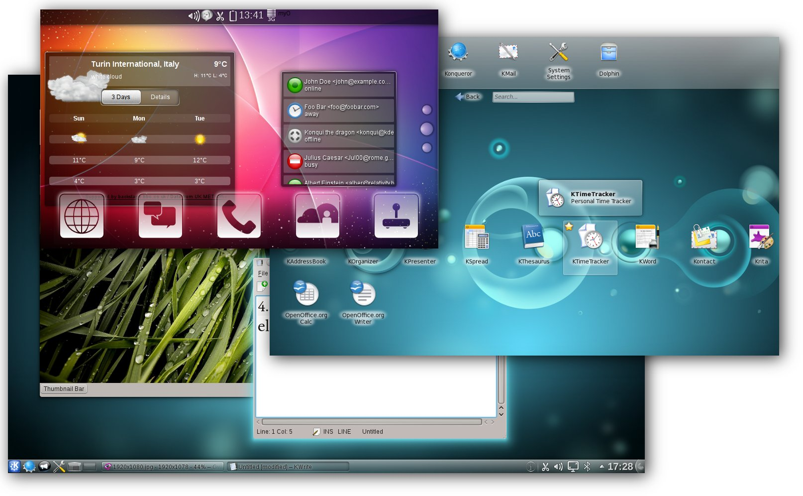

freiesMagazin Juli 2012
(ISSN 1867-7991)
Topthemen dieser Ausgabe
KdenliveDurch die vielfältigen Möglichkeiten, fast immer und überall Videos erstellen zu können, kommt man irgendwann an den Punkt, dass man sie nicht nur auf der Festplatte schmoren lassen, sondern auch Freunden und Bekannten präsentieren möchte. Nur muss vielleicht nicht jedes Detail einer Party zusehen sein. Als Linux-Nutzer ist man dabei bei Kdenlive an der richtigen Adresse. (weiterlesen)
Trac
Software für das Customer Relation Management (CRM) und zur Koordinierung von Neukundenakquisen gibt es in vielerlei Varianten. Aber manchmal muss es gar keine spezielle Software sein. Auch Software, die eigentlich für einen anderen Zweck geschrieben wurde, kann diese Aufgabe gut und effizient erfüllen: Trac. (weiterlesen)
KDE-Geschichte
Im Oktober des letzten Jahres konnte die KDE Community ihren 15. Geburtstag feiern. Grund genug einmal die Geschichte dieser Community zu beleuchten, die mittlerweile zu einer der größten Freien-Software-Communities der Welt aufgestiegen ist. (weiterlesen)
Zum Index
Inhalt
Linux allgemeinDer Juni im Kernelrückblick
Anleitungen
Perl-Tutorium – Teil 7
Software
Kdenlive – Der freie Videoeditor für Linux, Mac OS X und FreeBSD
Trac statt CRM – ein Erfahrungsbericht
Catacomb Snatch
Nicht nur für Zombies: Einstieg in IronPython
Community
KDE-Geschichte
Rezension: HTML5 & CSS3 for the Real World
Rezension: Apps mit HTML5 und CSS3 für iPad, iPhone und Android
Magazin
Editorial
Leserbriefe
Veranstaltungen
Vorschau
Konventionen
Impressum
Zum Index
Editorial
Spielen unter Linux
Letzten Monat [1] haben wir Sie zum Thema „Linux als Spieleplattform” gefragt, ob Sie Linux als eine eine realistische Alternative zu Windows ansehen, wenn es um Spiele geht. Dass es zumindest einige gute Spiele gibt, beweist die Vielzahl an Indie-Spielen, aber genügt dies? Die Meinungen einiger unserer Leser finden Sie in den Leserbriefen am Ende der Ausgabe.freiesMagazin als Debian-Paket
Wer jeden Monat nicht per RSS-Feed sondern per Paketverwaltung über die Neuerscheinung von freiesMagazin informiert werden will, kann sich zumindest als Ubuntu-Nutzer freuen. Der Benutzer MarcusLS [2] stellt jeden Monat freiesMagazin als deb-Paket in seinem PPA (Personal Package Archive) zur Verfügung. Das jeweils richtige PPA für seine Ubuntu-Version findet man auf der Übersichtsseite [3]. Dort klickt man auf den jeweiligen Eintrag mit „LTS“ oder „nonLTS“ und fügt das PPA wie gewohnt seiner Paketverwaltung hinzu. An dieser Stelle möchten wir darauf hinweisen, dass fremde Paketquellen Probleme bei Paketaktualisierungen bereiten können, vor allem, wenn sehr viel Software in ihnen vorhanden ist. Die Benutzung geschieht also auf eigene Gefahr. Daneben erfolgt das Angebot nicht von der freiesMagazin-Redaktion direkt, sondern ist ein reines Privatangebot. Wer es nutzen möchte, ist aber herzlich dazu eingeladen.Nach der EM das Sommerloch?
Autoren sind natürlich das Salz in der Suppe eines Magazins, denn ohne diese wäre die Setzer und Korrektoren arbeitslos. Da freiesMagazin keine feste Autorenmannschaft hat, sind wir auf Zusendungen aus der Community angewiesen. Dabei gilt: (Fast) jeder kann einen Artikel über das schreiben, was ihn interessiert. Eigentlich müssen Sie dafür nur Spaß am Schreiben haben und sich verständlich ausdrücken können, sodass jeder Leser Ihren Artikel oder Ihre Anleitungen nachvollziehen kann. Gerne gesehen sind vor allem Softwarevorstellungen und Spiele, aber auch HowTos oder Tutorials wünschen sich unsere Leser sehr. Eine übersichtliche Liste von gewünschten Themen finden Sie in unserer Artikelwunschliste [4]. Sicherlich kennen Sie sich in einem dieser Gebiete aus. Und wenn nicht, sind wir auch immer offen für ganz neue Vorschläge aus den Bereichen GNU/Linux, Freie Software und/oder Open Source. Wir freuen uns auf Ihre Artikel! Ihre freiesMagazin-Redaktion Links[1] http://www.freiesmagazin.de/freiesMagazin-2012-06
[2] https://launchpad.net/~marcusls/
[3] https://launchpad.net/~marcusls/+related-software
[4] http://www.freiesmagazin.de/artikelwuensche
Das Editorial kommentieren
Zum Index
Der Juni im Kernelrückblick
von Mathias Menzer Basis aller Distributionen ist der Linux-Kernel, der fortwährend weiterentwickelt wird. Welche Geräte in einem halben Jahr unterstützt werden und welche Funktionen neu hinzukommen, erfährt man, wenn man den aktuellen Entwickler-Kernel im Auge behält. Anfang Juni schloss Torvalds das Merge Window für Linux 3.5 und legte der Linux-Gemeinde die erste Entwicklerversion vor [1]. Die Anzahl der Änderungen hielt sich in etwa im Rahmen der letzten Kernelversionen, die größeren Neuerungen sind ähnlich überschaubar. Torvalds selbst machte auf den „CoDel Packet Scheduler“ aufmerksam. CoDel steht für Controlled Delay (gesteuerte Verzögerung) und soll die Größe des Warteschlange für zu sendende Netzwerkpakete entsprechend des Netzwerkdurchsatzes anpassen. Weiterhin wurde der Code des Virtualisierers KVM [2] unter der PowerPC-Architektur überarbeitet und aus dem Bereich der x86-Architektur wurde die Unterstützung für den alten und vermutlich sowieso nicht mehr genutzten MCA-Bus [3] entfernt. Treiberseitig kann der Zugang von Grafiktreibern für die 200er Serie von ASpeed Technologies sowie für die alten G200-Chipsätze von Matrox vermeldet werden. Ebenfalls neu ist ein Treiber, der eine Cirrus-Grafik unter QEMU [4] emuliert. Der eine oder andere altgediente Netzwerker wird sich ein Tränchen vielleicht nicht verkneifen können – die Unterstützung für Token Ring [5] wurde vollständig entfernt. Diese Art der Computervernetzung war eine frühe und äußerst stabile Art um Datenpakete zu übertragen. Letztlich konnte die damit mögliche Übertragungsrate jedoch nicht mit Ethernet Schritt halten. Verbesserungen in der Art der Verkabelung erhöhten zwar die Toleranz gegenüber fehlerhafter Verkabelung, jedoch konnte sich Token Ring letztlich nicht durchsetzen. Da mittlerweile der Pflegeaufwand der entsprechenden Implementierung im Linux-Kernel den Nutzen aus Sicht der Entwickler weit übersteigt, wurde die Unterstützung eingestellt. Entwicklerversion Nummer Zwei [6] folgte bereits sechs Tage später. Der Grund dafür war nicht, dass keine Pull Requests mehr bei ihm eingegangen wären, sondern eine Reise in seine Heimat Finnland um den Millenium-Preis der finnischen Akademie für Technologie entgegenzunehmen [7]. Entsprechend ist der -rc2 auch etwas kleiner als erwartet, bringt mit „Frontswap“ jedoch den zweiten Teil des Transzendenten Speichers. Der erste Teil, Cleancache, wurde bereits vor einem Jahr eingeführt (siehe „Der Mai im Kernelrückblick“, freiesMagazin 06/2011 [8]). Frontswap wird künftig die letzte Chance für wenig genutzte Speicherbereiche sein, um nicht direkt in den langsameren Swap-Bereich auf der Festplatte verschoben zu werden. Dabei wird nicht garantiert, dass Frontswap übergebene Speicherseiten auch annimmt. Jedoch ist gewährleistet, dass diese auch später noch vorhanden sind. Bei Cleancache sieht das etwas anders aus. Die hier gespeicherten Daten können zu einem späteren Zeitpunkt verschwunden sein, weshalb sich hier nur die Ablage redundanter Daten empfiehlt, zum Beispiel um sie zu cachen. Die Idee hinter Transcendent Memory ist das bessere Ausnutzen des Arbeitsspeichers, indem dieser maximal möglich belegt wird. Weiterhin verwenden Cleancache und Frontswap verschiedene Tricks wie Deduplizierung [9] und Komprimierung, um möglichst viele Daten unterzubringen. Ein kleines bisschen größer war die dritte Entwicklerversion [10], deren Änderungen jedoch fast durchgängig mit den Worten „fixes“ und „updates“ beschrieben waren. Eine der wenigen Ausnahmen stellt die Aufnahme eines Treibers für die Netzwerkkomponente von Tileras Tile-Gx-Prozessorfamilie [11] dar, die auch direkt mit knapp der Hälfte der hinzugekommenen Code-Zeilen auftrug. Weitere KVM-Korrekturen für die PowerPC-Architektur bringt dann Linux 3.5-rc4 [12] mit, gewürzt von Korrekturen des i915-Treibers für Intel-Grafiken. Letztere sollen unnötige Abfragen am Displayport [13] verhindern, die zum Flackern eines angeschlossenen Anzeigegeräts führen können. Die am meisten auftragende Änderung des eigentlich recht kleinen -rc4 waren Korrekturen an printk(), der für die Ausgabe von Kernel-Meldungen an dmesg, Syslog und die Konsole zuständigen Schnittstelle. Nun können auch Binärdaten, die im Ausgabepuffer landen, entsprechend weitergereicht werden. Links[1] https://lkml.org/lkml/2012/6/3/84
[2] https://de.wikipedia.org/wiki/Kernel-based_Virtual_Machine
[3] https://de.wikipedia.org/wiki/Micro_Channel_Architecture
[4] https://de.wikipedia.org/wiki/QEMU
[5] https://de.wikipedia.org/wiki/Token_Ring
[6] https://lkml.org/lkml/2012/6/8/596
[7] http://www.pro-linux.de/news/1/18474/millennium-preis-fuer-linus-torvalds-und-shinya-yamanaka.html
[8] http://www.freiesmagazin.de/freiesMagazin-2011-06
[9] https://de.wikipedia.org/wiki/Deduplizierung
[10] https://lkml.org/lkml/2012/6/16/181
[11] http://www.tilera.com/products/processors/TILE-Gx_Family
[12] https://lkml.org/lkml/2012/6/24/117
[13] https://de.wikipedia.org/wiki/DisplayPort
| Autoreninformation |
| Mathias Menzer (Webseite) wirft gerne einen Blick auf die Kernel-Entwicklung, um mehr über die Funktion von Linux zu erfahren und um seine Mitmenschen mit seltsamen Begriffen und unverständlichen Abkürzungen verwirren zu können. |
Diesen Artikel kommentieren
Zum Index
Perl-Tutorium – Teil 7: Objekte der neuen Schule
von Herbert Breunung Die objekt-orientierte Programmierung OOP (siehe aktuelle freiesMagazin-Serie) war in den letzten Jahren eines der bereicherndsten Themen für Perl. Nachdem im letzten Teil gezeigt wurde, wie bisher Objekte gestrickt wurden, wird jetzt der Zugang zu den neuen Wegen geöffnet, die weit mehr beinhalten, als man von Perl gewohnt war.Hefte raus
Doch zuerst soll die Hausaufgabe verglichen werden. Die Methode zufuege_notiz sollte um 3 Zeilen verlängert, sowie deren Anbindung angepasst werden. Neben dem richtigen Umgang mit splice kam es vor allem darauf an zu verstehen, dass die Hilfsmethode valider_index in diesem Fall unbrauchbar ist. Die neue Nachricht darf ja auch an die hinterste bisher nicht existierende Position. Dahinter verbirgt sich ein sehr häufiges, grundsätzliches Problem. Das richtige Fingerspitzengefühl, ob man besser valider_index erweitert, oder eine zusätzliche Methode schreibt, macht „echte” Programmierer aus. In diesem Fall kopierte der Autor die entscheidende Zeile aus valider_index und passte sie an. Auch wenn das scheinbar gegen das heilige DRY-Gesetz verstößt und ein Prediger des sauberen Codes empfehlen würde, etwas neues zu schreiben, statt nur eine Zeile sich wiederholen zu lassen, waren andere Gründe ausschlaggebend. Erstens ist das Projekt noch sehr jung und „vorzeitige Optimierungen sind der Grundstein allen Übels”, wie ein anderer oft wiederholter Vers berichtet. Zum anderen ist es nicht sinnvoll, für einen absehbar einmaligen Spezialfall eine weitere Routine zu schreiben.sub zufuege_notiz {
my ($selbst, $text, $index) = @_;
$index = $selbst->letzter_index + 1 unless defined $index;
return 1 unless $index >= 0 and $index <= $selbst->letzter_index + 1;
splice(@{$selbst->{'notizen'}}, $index, 0, $text);
return 0;
}
Hinter der dritten Zeile verbirgt sich eine weitere wichtige Überlegung. Wenn
kein index als zweiter Parameter angegeben wird, erscheint die Notiz an
letzter Position. Das entspricht dem bisherigen Verhalten und alle alten
Aufrufe dieser Funktion funktionieren weiterhin. Mindestens genauso wichtig ist
aber auch, dass man so beim Aufruf der Funktion die Anzahl der Notizen nicht
kennen muss. Es ist ja der Sinn eines Objektes, die Innereien zu verbergen. Das
verhindert auch, dass die Programmteile wie ein Wollknäuel zusammenhängen und
Änderungen immer schwerer werden. Optional könnte man auch -1 für den
letzten Index angeben. Viele Perlbefehle wie substr und splice
erlauben negative Indizes bei denen von hinten statt von vorne
gezählt wird. -2 wäre dann die vorletzte Position und so weiter. Um das
nachzuahmen, bräuchte zufuege_notiz statt der alten vierten Zeile:
my ($selbst, $text, $index) = @_;
$index = $selbst->letzter_index + 1 unless defined $index;
return 1 unless $index >= 0 and $index <= $selbst->letzter_index + 1;
splice(@{$selbst->{'notizen'}}, $index, 0, $text);
return 0;
}
return 1 if abs($index) > $selbst->letzter_index + 1;
$index = $selbst->letzter_index + 2 - $index if $index < 0;
abs liefert den absoluten Wert einer Zahl (lässt das Vorzeichen weg).
Wer gnädiger gestimmt ist, kann auch bei nicht existierenden Positionen statt
1 zurückzugeben und die (noch nicht existierende) Hilfe anzuzeigen
ebenfalls die letzte Position anwählen. Um die Zeilen ein wenig abzukürzen und
verständlicher zu machen, wird noch $selbst->letzter_index + 1 in eine
Variable verpackt. Die Routine sieht dann endlich so aus:
$index = $selbst->letzter_index + 2 - $index if $index < 0;
sub zufuege_notiz {
my ($selbst, $text, $index) = @_;
my $letzte_pos = $selbst->letzter_index + 1;
$index = $letzte_pos unless defined $index;
return 1 if abs($index) > $letzte_pos;
$index = $letzte_pos + 2 - $index if $index < 0;
splice(@{$selbst->{'notizen'}}, $index, 0, $text);
return 0;
}
Auf der anderen Seite des Aufrufes wurde aus:
my ($selbst, $text, $index) = @_;
my $letzte_pos = $selbst->letzter_index + 1;
$index = $letzte_pos unless defined $index;
return 1 if abs($index) > $letzte_pos;
$index = $letzte_pos + 2 - $index if $index < 0;
splice(@{$selbst->{'notizen'}}, $index, 0, $text);
return 0;
}
when ($kommando{'neu'}) {
continue if $daten->zufuege_notiz($notiz);
}
folgendes:
continue if $daten->zufuege_notiz($notiz);
}
when ($kommando{'neu'}) {
my($vor_dp, $nach_dp) = split ':',substr($notiz, 1);
my $pos;
if (defined $nach_dp) {
$notiz = ' '.$nach_dp;
$pos = $vor_dp;
}
continue if $daten->zufuege_notiz($notiz, $pos);
}
Wer mag kann 3 Zeilen zu einer schrumpfen lassen:
my($vor_dp, $nach_dp) = split ':',substr($notiz, 1);
my $pos;
if (defined $nach_dp) {
$notiz = ' '.$nach_dp;
$pos = $vor_dp;
}
continue if $daten->zufuege_notiz($notiz, $pos);
}
($pos, $notiz) = ($vor_dp, ' '.$nach_dp) if defined $nach_dp;
$pos muss vorher angemeldet werden, sonst dürfte es nicht im letzten
Aufruf verwendet werden (use strict; ist aktiv). Da (wie in den Teilen 1
bis 4 erläutert) im Falle einer simplen Eingabe (notiztext) $pos
undef bleibt, ist es für zufuege_notiz als bekäme sie keinen
Parameter index.
Das alles würde eine sehr gute Lösung ergeben, aber mittlerweile hat fast jede
when-Klausel fast die gleiche Zeile mit split. Deshalb wurde es
nach oben bewegt:
given ( substr($notiz, 0, 1) ) {
my($vor_dp, $nach_dp) = split(':',substr($notiz, 1), 2);
when ($kommando{'neu'}) {
my $pos;
if (defined $nach_dp) {
$notiz = ' '.$nach_dp;
$pos = $vor_dp;
}
continue if $daten->zufuege_notiz($notiz, $pos);
}
...
Dadurch konnten die nächsten zwei Klauseln um die verschobene Zeile gekürzt
werden:
my($vor_dp, $nach_dp) = split(':',substr($notiz, 1), 2);
when ($kommando{'neu'}) {
my $pos;
if (defined $nach_dp) {
$notiz = ' '.$nach_dp;
$pos = $vor_dp;
}
continue if $daten->zufuege_notiz($notiz, $pos);
}
...
when ($kommando{'aendere'}){
continue if length($notiz) < 4;
continue if $daten->aendere_notiz($nach_dp, $vor_dp);
}
when ($kommando{'bewege'}) {
continue if length($notiz) < 4;
continue if $daten->bewege_notiz($vor_dp, $nach_dp);
}
Die neue Einheitlichkeit macht den Code zusätzlich verständlicher. Außerdem
wurde split zuletzt noch ein dritter Parameter gegeben. Er bestimmt,
dass nur in 2 Teile zerlegt wird. Wenn die Notiz nämlich auch einen Doppelpunkt
enthält, teilt split in drei Teile. Dann geht der hintere Teil der
Nachricht verloren, da ihn keine Variable speichert. Mit dem Limit bekommt
$nach_dp die gesamte Notiz, selbst wenn sie Doppelpunkte enthält.
Diese Lösung (bn.pl) ist sicherlich noch nicht astrein und
endgültig, aber für den derzeitigen Stand genau genug.
continue if length($notiz) < 4;
continue if $daten->aendere_notiz($nach_dp, $vor_dp);
}
when ($kommando{'bewege'}) {
continue if length($notiz) < 4;
continue if $daten->bewege_notiz($vor_dp, $nach_dp);
}
Jetzt kommt der Elch
Nun endlich zur angekündigten Objektorientierung! Dafür ist diese Folge bestimmt zu kurz, denn Moose (englisch für Elch) verdient ein eigenes, zehnteiliges Tutorial. (Ein kleines, deutsches Tutorial ist gerade erschienen [1].) Moose führt nebenbei noch Datentypen, erstellbare Subtypen, Delegation, Teilklassen (roles), Wrapping und sehr viel mehr ein. Durch Ergänzungen aus dem kreativen MooseX-Ökosystem erhält man sogar echte Signaturen und neue, passende Schlüsselworte. (Das „X” am Ende steht für Module, die ohne Rücksprache mit den Autoren von Moose ins CPAN geladen werden.) Wie kam Stevan Little dazu, solch eine umfangreiche Spracherweiterung aufzubauen? Die meisten anderen Objektsysteme im CPAN erleichtern gerade einmal das Schreiben der new-Methode und die Erzeugung von Attributen (autogenerierte getter/setter). Wie so oft steckt dahinter Larry Wall. Mit dem immer noch nicht vollendeten Entwurf der Schwestersprache „Perl 6” legte er ein Objektsystem vor, wie es sich viele auch für Perl 5 wünschen. Nur leider ist vieles von seiner Mächtigkeit an Funktionalität gekoppelt, die Perl 5 ebenfalls nicht besitzt. Somit konnte hier nicht, wie sonst üblich, ein einzelnes Feature in ein Modul verpackt werden, dessen Name mit Perl6:: beginnt, damit auch Perl 5-Benutzer in dessen Genuss kommen. Stevan schuf mit Class::MOP erst einmal ein an Common Lisp angelehntes Metaobjektsystem, mit dem sich jeder sein eigenes Objektsystem gestalten könnte. Das rief natürlich die Spielkinder auf dem Plan und nach einiger Zeit flossen verlockend aussehende Möglichkeiten aus Smalltalk, Java, BETA, OCaml, Ruby und anderen Sprachen in Moose ein. Überhaupt zeichnet Moose eine hohe Beteiligung auf allen Ebenen aus. Viele wichtige Projekte setzen es ein und es wird sogar auf perl.org [2] und enlightenedperl.org [3] als Standardweg empfohlen. Ab Perl 5.16 weist es auch die Kerndokumentation als lobenswerte Alternative aus [4]. Es ist außerdem geplant nach 5.16 (erschien letzten Monat) eine kleine Auswahl aus Moose in den Sprachkern aufzunehmen. Stevan Little arbeitet bereits daran. Der Erfolg von Moose kam auch daher, dass seine Objekte voll kompatibel sind, was für viele andere Objektsysteme nicht zutrifft. Alles, was in der letzten Folge geschrieben wurde (bis aus die Syntax zur Erzeugung von Objekten), gilt hier auch. Moose-Klassen vererben ihre Schätze an alte Klassen wie bereits bekannt und ebenso können Moose-Klassen mithilfe von MooseX::NonMoose alte Klassen beerben. Wer das CPAN kennt, der weiß auch, dass ein großes und erfolgreiches Modul sehr schnell Nachahmer findet, welche es beschleunigen und auf das Wesentliche reduzieren wollen. Mouse ist eine fast vollständig kompatible Alternative ohne Class::MOP, die erheblich schneller startet. Moo ist nicht kompatibel, sondern nur ähnlich und auf das reduziert, was die 40 anderen Objektsysteme auch bieten. Nur ist es sehr schnell, hat keine Abhängigkeiten und an Moose Gewöhnte müssen kaum umlernen. In diesem Tutorialteil wird jedoch nur ein Ersatz für die Daten.pm entwickelt, der Moose benutzt.Objekte deklarativ
Genau gesagt wird MooseX::Declare [5] benutzt, welches die beliebtesten Erweiterungen gleich mit lädt. Moose orientiert sich nämlich sehr konservativ an den Schreib- und Verhaltensweisen von Perl 5, da es für den professionellen Gebrauch getrimmt ist. Mit MooseX::Declare heißt die Klasse class, die Methode method und nicht package und sub wie sonst in Perl 5. Es spart auch wiederkehrende Phrasen wiemy $self = shift;
sowie das
__PACKAGE__->meta->make_immutable;
mit dem die Klasse verspricht, sich zur Laufzeit nicht mehr ändern zu wollen
und dafür an Geschwindigkeit gewinnt. Die Unterschiede sind noch wesentlich
tiefgreifender, aber das waren (mit den hinzukommenden Signaturen) die Gründe
dieses Module zu wählen, um Moose von seiner elegantesten Seite zu zeigen.
Da Moose-Klassen so andersartig geschrieben werden, sollte das Modul ganz neu
aufgezogen werden. Dabei bekommt nur die Datei, aber nicht die Klasse einen
neuen Namen, damit eine kleine Änderung in Zeile 5 einen einfachen Wechsel
erlaubt. use (wie im Teil 5 beschrieben) befiehlt ja im wesentlichen
nur, eine bestimmte Datei zu laden. Die enthaltene Klasse oder das enthaltene
Modul hat zwar in den meisten Fällen den gleichen Namen, aber das ist
freiwillig. Das Grundgerüst der MDaten.pm ist also:
use v5.12;
use MooseX::Declare;
use YAML;
class Daten {
}
Den Namensraum der Klasse in geschweifte Klammern zu legen, ist für
Perl-5-Programmierer ungewohnt. Aber auch in diesem Detail versucht
MooseX::Declare, so weit es geht, sich Perl 6 anzunähern. Bemerkenswert
ist zudem, dass die notorische 1; in der letzten Zeile des Moduls
weggelassen werden darf, was aber auch mit Moose funktioniert hätte.
Der wichtigste Befehl den Moose einführt ist has. Es ist das
Schlüsselwort mit dem auch in Perl 6 Attribute angemeldet werden.
Und da seine
Akzessoren (Getter und Setter) normale Methoden sind, in denen sich all die
Magie verbirgt, die hier noch bestaunt wird, kann Moose auch kompatibel
mit den alten Klassen sein.
use MooseX::Declare;
use YAML;
class Daten {
}
Attribute
Das erste Attribut der Klasse ist der Name der zu ladenden Datei, in der alle Notizen gespeichert sind. Ihm werden bereits in der Definition Eigenschaften gegeben, über deren Einhaltung Moose wachen wird.has 'datei' => (
isa => 'Value',
is => 'ro',
required => 1,
trigger => sub {
my $datei = shift->datei;
die "Datei: '$datei' nicht lesbar!" unless -r $datei;
},
);
Zuerst einmal ist das Attribut datei vom Typ Value. Das bedeutet,
dass leere Werte oder auch Referenzen als Inhalte nicht akzeptiert werden und
zur Laufzeit einen harten Fehler (mit Programmabbruch) ergeben. Ein praktische
Übersicht zu allen Moose-Datentypen und mehr hat der Spickzettel von Oliver
Gorwits [6].
ro steht für readonly, denn der Inhalt von datei soll nur einmal
beim Erzeugen des Objektes gesetzt und nie wieder verändert werden. Wird er
nicht angegeben, gibt das auch einen Error, da required => 1 dieses
Verhalten festlegt. Wenn es keinen Dateinamen gibt, braucht das Programm auch
nicht zu starten. Wo sollen denn dann die Notizen gespeichert werden?
Es sollte außerdem geprüft werden, ob die besagte Datei anwesend ist. Dies
übernimmt der letzte Eintrag, da die durch trigger bestimmte Routine
immer ausgeführt wird, wenn sich der Inhalt von datei verändert. Die
Routine bekommt das Objekt als Parameter, wie jede andere Methode auch. Vom
Objekt interessiert aber nur das Attribut datei. Dieses wird mit dem in
Folge 2 erklärten Dateitestoperator für die Lesbarkeit der Datei (-r)
überprüft und bei Fehlschlag mit Fehlermeldung abgebrochen. Da das Attribut
automatisch angelegt wird, gibt es keine Methode neu mehr. Die neue
Erzeugung des Objektes lautet daher:
isa => 'Value',
is => 'ro',
required => 1,
trigger => sub {
my $datei = shift->datei;
die "Datei: '$datei' nicht lesbar!" unless -r $datei;
},
);
my $daten = Daten->new( datei => 'notizblock.yml' );
Um noch mit der alten Klasse kompatibel zu bleiben, könnte man die Parameter in
geschweifte Klammern legen:
my $daten = Daten->new({ datei => 'notizblock.yml'});
Moose kann mit dieser verbreiteten Schreibweise gut umgehen, nur die Methode in
der Daten.pm muss angepasst werden. Denn die Methode muss jetzt
new heißen und bekommt ihre Parameter mit Namen in einem Hash:
sub new {
my ($klasse, $param) = @_;
my $selbst = bless ({ }, $klasse);
$selbst->datei_lesen( $param->{'datei'} ) if defined $param->{'datei'};
$selbst->{'notizen'} = [] unless exists $selbst->{'notizen'};
return $selbst;
}
Um solche Codeblöcke nebst allen Prüfungen der eingehenden Daten nicht mehr
schreiben zu müssen, wurde Moose entwickelt.
Das andere derzeit benötigte Attribut ist die Liste der Notizen.
my ($klasse, $param) = @_;
my $selbst = bless ({ }, $klasse);
$selbst->datei_lesen( $param->{'datei'} ) if defined $param->{'datei'};
$selbst->{'notizen'} = [] unless exists $selbst->{'notizen'};
return $selbst;
}
has 'notizen' => (
isa => 'ArrayRef[Value]',
is => 'rw',
lazy => 1,
default => sub { [ YAML::LoadFile( shift->datei ) ] },
);
Sie muss ein Array aus echten Werten sein, die auch schreibbar sein sollten.
(rw steht wie auf Rohlingspackungen für read and write – lesen und
schreiben). lazy (faul) sagt aus, dass der Anfangswert erst dann erzeugt
wird, wenn die erste Leseanfrage an das Attribut kommt. Und default
zeigt auf eine Codereferenz, welche den Anfangswert ermittelt. Da
LoadFile einen Array liefert aber notizen als
ArrayRef[Value] (Referenz auf einen Array aus Werten) definiert ist,
mussten eckige Klammern drumherum, welche die gewünschte Referenz anlegen. Auf
diese Art ist sicher gestellt, dass der Dateiname bekannt ist, wenn die Datei
geladen wird.
isa => 'ArrayRef[Value]',
is => 'rw',
lazy => 1,
default => sub { [ YAML::LoadFile( shift->datei ) ] },
);
Methoden
Die Methoden anzupassen, geht relativ einfach. Man muss nur auf $self aufpassen. Diese von MooseX::Declare automatisch angelegte Variable beinhaltet die Referenz auf das Objekt. Aber wenn die Methoden eigene Parameter aus @_ fischt (siehe letzte Folge), dann ist das Objekt immer noch der erste Parameter. Deshalb könnte man schreiben:method datei_schreiben {
YAML::DumpFile( $self->datei, @{ $self->notizen } )
}
oder
YAML::DumpFile( $self->datei, @{ $self->notizen } )
}
method datei_schreiben {
my ($selbst) = @_;
YAML::DumpFile( $selbst->datei, @{ $selbst->notizen } )
}
zufuege_notiz, bewege_notiz und loesche_notiz brauchen
deshalb nicht geändert werden, nur aus sub muss method werden.
Normalerweise wird der Akzessor wie $selbst->notizen(...)angewendet.
Aber da hier splice mit vier Parametern verwendet wird, ändert das auch den
Inhalt des Attributes notizen.
In aendere_notiz wird ein
Arrayelement wie folgt geändert:
my ($selbst) = @_;
YAML::DumpFile( $selbst->datei, @{ $selbst->notizen } )
}
$selbst->notizen->[$index] = $text;
Manche mögen überlegen, die Notizen immer am Ende in die Datei zu schreiben.
Dann ließe sich der Aufruf von datei_schreiben im Hauptprogramm sparen.
(Kein Code kann keine Fehler beinhalten.) Dazu muss nur der Inhalt oder ein
Aufruf in die Methode
method DEMOLISH { ...
die immer am Ende der Lebensdauer eines Moose-Objektes aufgerufen wird. Da sich
aber die Bedienung sicher noch ändern wird, sollte der Vermerk darüber wann
gespeichert wird im Hauptprogramm bleiben („vorzeitige Optimierungen …”).
Signaturen
Eine der lautesten und berechtigsten Kritikpunkte an Perl ist das Fehlen von Signaturen. Sicher ist jede Art der Parameterübergabe an Routinen mit @_ möglich, doch steht auf den eigenen Fahnen, dass es mehr als einen Weg gibt. Daher sollte auch der, den Java, Python & Co gehen, und der für tausende Programmierer der gewohnte und natürliche ist, möglich sein. Die Rede ist von der Definition der Parameter in runden Klammern nach dem Namen der Routine. Wer die Änderungen der letzen Perlversionen aufmerksam verfolgte, merkt, dass Vorbereitungen in diese Richtung getroffen werden. Wer jedoch volle Signaturen sofort haben will, der nehme ein Modul wie signatures, Sub::Signatures oder MooseX-Method-Signatures. Letzteres ist in MooseX::Declare enthalten. Angewandt wird ausmethod valider_index {
my ($selbst, $index) = @_;
return 0 if $index != int $index;
return 1 if $index >= 0 and $index <= $selbst->letzter_index;
}
Folgendes:
my ($selbst, $index) = @_;
return 0 if $index != int $index;
return 1 if $index >= 0 and $index <= $selbst->letzter_index;
}
method valider_index (Num $index) {
return 1 if $index >= 0 and $index <= $self -> letzter_index;
}
Denn spätestens an dieser Stelle muss $self verwendet werden. Dafür wacht Moose,
dass wirklich Zahlen übergeben werden und erstellt sofort gleichnamige, lokale
Variablen, was die Methoden weiter verkürzt. Ein vorangehender Doppelpunkt in
der Signatur ermöglicht sogar benannte Parameter (wie bei new) und ein
nachgestelltes Fragezeichen stimmt Moose sehr gnädig, wenn dieser Parameter
fehlt (er ist dann optional). Notwendige Parameter (wie mit required =>
1 verlangt), hätten ein Ausrufezeichen an der Stelle. Positionale Parameter
sind von Haus aus notwendig und benannte optional – alles wie in Perl 6. In
Signaturen lassen sich auch Datentypen, selbsterdachte Subtypen und
Defaultwerte angeben.
return 1 if $index >= 0 and $index <= $self -> letzter_index;
}
method beispiel (Str :$name = "Max Mustermann", Int :$alter! where { $_ > 0 } ) {...
Da MooseX::Declare Moose::Util::TypeConstraints ebenfalls lädt,
könnte man damit einen eigenen Subtypen von Int anlegen, welcher nur
gültige Listenpositionen umfasst. So könnte Moose auch den Auftrag bekommen
aufzupassen, dass nur gültige Indizes gewählt werden, statt dafür wiederholt
etwas in die Methoden zu schreiben. Da dies einen Methodenaufruf in der
Subdefinition verlangt, würde das aber über den hiesigen Rahmen gehen. Als
kleines Beispiel soll ein Typ für gerade Zahlen genügen, der seine eigene
Fehlermeldung mitbringt.
subtype 'Gerade'
=> as Int
=> where { $_ % 2 == 0}
=> message { "$_ ist ungerade!" };
=> as Int
=> where { $_ % 2 == 0}
=> message { "$_ ist ungerade!" };
Abschluss
Diese bisher nicht beachtete Methode kann als überflüssig angesehen werden:method numerische_reihenfolge { @{ $self->notizen } }
Andere Sortierreihenfolgen sind jedoch geplant, und werden erscheinen, wenn
Perls Alleskönner in Zeitfragen (das Modul DateTime) im übernächsten
Teil vorgestellt wird. Hausaufgabe soll eine optionale, alphabetische sortierte
Anzeige der Notizen sein. Da in dieser Folge die Grenzen von split und
substr sichtbar wurden, sollen beim nächsten Mal erste, einfach reguläre
Ausdrücke eingesetzt werden. Die vollständigen Dateien des aktuellen Standes
sind beigefügt. Es wurde auch der Text verbessert, mit dem nach Eingabe des
Kommandos gefragt wird.
Links[1] http://www.heise.de/developer/artikel/Moose-Eine-post-moderne-OOP-Erweiterung-fuer-Perl-1584651.html
[2] http://www.perl.org/about/whitepapers/perl-object-oriented.html
[3] http://www.enlightenedperl.org/projects.html
[4] http://metacpan.org/module/perlootut
[5] http://metacpan.org/module/MooseX::Declare
[6] http://gorwits.me.uk/data/files/moose-quick-ref.pdf
| Autoreninformation |
| Herbert Breunung (Webseite) ist seit sieben Jahren mit Antworten, Vorträgen, Wiki- und Zeitungsartikeln in der Perl-Gemeinschaft aktiv. Dies begann mit dem von ihm entworfenen Editor Kephra, den er leidenschaftlich gerne pflegt. Daneben beschäftigt er sich hauptsächlich mit wxPerl und Perl 6. |
Diesen Artikel kommentieren
Zum Index
Kdenlive – Der freie Videoeditor für Linux, Mac OS X und FreeBSD
von Stephan Theelke Durch die vielfältigen Möglichkeiten, fast immer und überall Videos erstellen zu können, kommt man irgendwann an den Punkt, dass man sie nicht nur auf der Festplatte schmoren lassen, sondern auch Freunden und Bekannten präsentieren möchte. Nur muss vielleicht nicht jedes Detail einer Party zusehen sein. Als Linux-Nutzer ist man dabei bei Kdenlive [1] an der richtigen Adresse. Ein anderes Beispiel ist die Rettung von alten privaten Videokassetten. Sind sie erst einmal auf dem PC, ist es ganz einfach, sie aufzufrischen, zu schneiden oder auch zusammenzufassen. Das heißt, fehlerhafte oder langatmige Stellen können herausgeschnitten oder gekürzt werden. Farb- und Tonkorrekturen sind natürlich ebenfalls möglich. Dieser Artikel stellt das Programm Kdenlive in den Grundzügen vor und will ein erstes Interesse an Videobearbeitung unter Linux wecken.Allgemeine Informationen
Die Entwicklung des freien Videoeditors geht bis auf das Jahr 2002 zurück. Zehn Jahre später erschien im Mai 2012 die Version 0.9.2. Ziel der Entwickler ist außerdem, zum Ende des Jahres 2012 die erste 1.0er Version veröffentlichen zu können. Die Installation des Programms lässt sich bequem über die Paketverwaltung durchführen. Wie der Name andeutet, ist das Programm auf den KDE-Desktop zugeschnitten und seit letztem Jahr auch Bestandteil der KDE SC, was unter anderem bedeutet, dass Übersetzungen zentral verwaltet werden. Somit ist Kdenlive für alle Distributionen, die KDE unterstützen, verfügbar. Außerdem gibt es Pakete für FreeBSD und den Mac. Einschränkend muss man dazu sagen, dass es die Mac-Pakete nicht nativ gibt, sondern dass sie nur für MacPorts [2] zur Verfügung stehen.Unterstützte Formate
Kdenlive unterstützt viele bekannte Formate. Es ist möglich, von Videokameras Filme auf den Rechner zu importieren, da Kdenlive mit den gängigen Camcorder-Formaten zusammenarbeitet. Im Speziellen sind das MiniDV, HDV und AVCHD, wobei letzteres noch experimentell ist. Daneben beherrscht es aktuelle Video-, Audio- und Bildformate. Man kann unter anderem Flash-Videos, ohne sie umzuwandeln, bearbeiten oder die angesammelten Handyvideos endlich ansprechend präsentieren. Wenn der Film fertiggestellt ist, stellt sich die Frage, ob man ihn z. B. ins Internet stellen oder auf DVD festhalten will. Zum Glück bringt Kdenlive auch dafür alles Erforderliche mit. In den Einstellungen zum Rendern findet man sehr viele passende Profile, die das Leben in dieser Beziehung stark vereinfachen und trotzdem ein hervorragendes Ergebnis zu Tage fördern.Rendereinstellungen.
Wem die gebotene Auswahl nicht ausreicht, der kann sich darüber hinaus ganz einfach ein eigenes Render-Profil anlegen.
| Unterstützte Formate (Auswahl) | |
| Video | flv, mpeg, avi, mp4 und mov |
| Audio | mp3, vorbis, wav, ogg und ac3 |
| Bild | gif, png, jpeg, xcf und svg |
Benötigte Hardware
Soll die Bearbeitung und später das Rendern nicht Ewigkeiten in Anspruch nehmen, ist die nötige Hardware, gerade bei hochauflösenden Aufnahmen in HD, gefragt. Empfohlen wird für den normalen Nutzer ein PC ab Baujahr 2006. Das entspricht einem Rechner mit Single oder Dual Core. Für die Filme wird freier Festplattenplatz von mindestens 20 GB benötigt, außerdem ein Firewire-Anschluss für die Aufnahme von einem Camcorder. Zudem sollten mindestens 1 GB RAM an Arbeitsspeicher verbaut sein und auf dem Schreibtisch ein Bildschirm mit einer Auflösung von mindestens 1024x768 Pixel stehen. Fortgeschrittene und Semi-Profis sollten sich aber damit nicht zufrieden geben. Sie sind mit einer Maschine, die einen Vierkern-Prozessor und mindestens 4 GB RAM enthält, besser beraten. Auch ist eine Grafikkarte, die zwei Bildschirme unterstützt, von großem Vorteil, da alle Fenster in Kdenlive abgedockt und beliebig auf dem Desktop arrangiert werden können. Zuletzt wird für einen vernünftigen Datendurchsatz ein Festplattenaufbau im RAID5-Verbund [3] nahegelegt.Programmstart
Beim ersten Start von Kdenlive öffnet sich der Konfigurationsassistent, in dem man die Grundeinstellungen vornimmt. Dort werden zuerst die installierten Module und Codecs, die zum Arbeiten mit den Audio- und Videodateien benötigt werden, geprüft. Ggf. muss etwas nachinstalliert werden, was im Assistenten durch ein rotes Kreuz angezeigt wird.Xine ist nicht installiert.
Als nächstes kann man das Videoprofil für das Projekt auswählen. Die Einstellung des Profils sollte immer mit der Auflösung, der Bildwiederholfrequenz und dem Seitenverhältnis des zu bearbeiteten Videomaterials übereinstimmen. Eine genauere Erklärung kann man dazu im Kdenlive-Forum [4] finden. Danach folgt die Auswahl des Standardordners für die Projekte, und anschließend wird überprüft, ob eine Webcam vorhanden ist. Zum Schluss folgt die Abfrage, ob die benötigten Zusatzprogramme, zum Beispiel für das Importieren des Films über Firewire oder die Aufnahme des Desktops, installiert sind.
Einige der möglichen Videoprofile.
Der Konfigurationsassistent.
Das Abbrechen des Assistenten stellt auch kein Problem dar, da man ihn jederzeit über den Menüpunkt „Einstellungen“ erreicht.
Aufbau der Programmoberfläche
Der Aufbau von Kdenlive gestaltet sich denkbar einfach und gliedert sich grob in vier Teile.Gesamtübersicht von Kdenlive.
Im Projektbereich werden alle Dateien, also Filme, Bilder und Musik, verwaltet. Die Effektebene beherbergt alles, um die Projektdaten bild- und tontechnisch zu bearbeiten, angefangen bei Helligkeits- und Farbkorrekturen bis hin zur Tongestaltung und Entzerrung von Tonfrequenzen. Daneben gibt es mehrere Monitore. Zum einen kann im Aufnahmemonitor das Überspielen auf den Rechner vom Camcorder oder von der Webcam gestartet werden. Im Clip-Monitor werden dagegen die Rohdateien aus dem Projektbereich angezeigt. Um die Bearbeitung zu visualisieren wird der Projektmonitor benötigt. In ihm werden die in den Audio- und Videospuren lagernden Daten wiedergegeben. Somit bilden die Audio- und Videospuren den vierten Teil des Aufbaus. Hier findet also das Schneiden und Arrangieren zum fertigen Film statt. All dies wird in den nächsten Abschnitten ausführlicher beschrieben.
Der Projektbereich
Im Projektinhalt finden sich die Projekt-Rohdaten wieder. Durch einen Klick auf den Filmstreifen oder durch Auswahl von „Datei hinzufügen“ im Kontextmenü, können sie eingebunden werden.Gruppierter Projektinhalt.
Die Vielzahl von unterstützten Formaten hat den Vorteil, dass das aufwendige Umwandeln von Video-, Audio- und Bilddateien entfällt. Neben den Rohdaten werden im Projektinhalt auch Clips für den Vor- und Abspann aufgelistet. Kommen weitere Clips oder Generatoren hinzu, kann leicht die Übersicht verloren gehen, bevor die eigentliche Arbeit begonnen hat. Kdenlive bietet natürlich auch hier Abhilfe. Über das Kontextmenü kann man Ordner zum Projektinhalt hinzufügen. Dadurch werden die Projektdaten strukturiert, zugleich sind sie einfacher zu handhaben. Zum Schluss ist noch die Registerkarte „Projektnotizen“ zu erwähnen. Durch sie bleibt der Überblick selbst dann erhalten, wenn längere Zeit nicht an einem Film gearbeitet wurde.
Der Bereich mit den Video- und Audiospuren
Aus dem nun übersichtlich gestalteten Projektinhalt kann man per Drag & Drop die Dateien auf die Spuren ziehen und arrangieren. Zur besseren Unterteilung gibt es Audio- und Videospuren, deren Anzahl beliebig angepasst werden kann. Die Grundeinstellung von drei Video- und zwei Audiospuren reicht aber in den meisten Fällen aus.Die Standardvideospuren.
Oberhalb der Spuren befindet sich die Zeitleiste. Sie zeigt die Länge des Films einmal in Zeiteinheit oder in der Anzahl der Bilder (Frames) an. Ihre Zoomstufe ist mittels des Schiebers in der Statusleiste veränderbar. Zoomstufe 13 ist die höchste; mit ihr ist ein genaues Bild-für-Bild-Bearbeiten möglich. 0 ist die niedrigste Zoomstufe und ermöglicht je nach Länge des Films einen Gesamtüberblick.
Die Statusleiste.
An der linken Seite befinden sich die Köpfe der Spuren. Hier können sie entweder umbenannt oder für die Bearbeitung gesperrt werden. Daneben besteht die Option, sie stumm zu schalten und zu verbergen. Jetzt folgen ein paar grundlegende Möglichkeiten der Bearbeitung. Zum Kürzen eines Videos reicht es, mit der Maus an das Ende oder den Anfang eines Clips zu fahren. Dort erscheint ein grüner, blinkender Pfeil und der Mauszeiger ändert seine Form zu einem Pfeil mit einem senkrechten Balken an der Spitze. Jetzt einfach die Maustaste gedrückt halten und in die zu kürzende Richtung ziehen. Des Weiteren kann man Clips teilen oder gruppieren. Zum Teilen wird das Scherensymbol unterhalb der Spuren ausgewählt und auf die zu teilende Stelle im Clip geklickt. Zum Verbinden wählt man zuerst die Clips aus und klickt dann im Kontextmenü auf „Clips gruppieren“. Interessant ist zudem die Funktion „Audio teilen“, die man ebenfalls über das Kontextmenü erreicht. Mit dieser Funktion wird der Audioanteil von einem Video getrennt; beide Teile sind somit separat editierbar. Ein kleines Anwendungsbeispiel: Es wurde eine Rede aufgenommen. Um sie visuell aufzupeppen zeigt man Bilder eines anderen Clips (z. B. die Zuschauerränge). Es ist also möglich, Teile des Redeclips zu entfernen und mit anderen Szenen zu ersetzen. Der Audioanteil bleibt so unverändert und doch wird die Rede durch abwechslungsreiche Szenen aufgelockert.
Der Monitorbereich
Wie eingangs erwähnt bietet Kdenlive drei Monitore. Der Aufnahmemonitor verwaltet das Übertragen (engl. „Capture“) von angeschlossenen Endgeräten auf den Rechner. Das kann zum Beispiel eine Webcam oder ein Camcorder sein. Die Bildschirmaufnahme wird auch angeboten, doch dazu am Ende dieses Abschnittes mehr.Die Monitore.
Nun folgt die Vorgehensweise zum Capturen eines Films von einem Camcorder. Dazu muss der Camcorder per Firewire an den PC angeschlossen und der Abspielmodus aktiviert werden. Im Aufnahmemonitor wird per Auswahlmenü „Firewire“ eingestellt. Über die Knöpfe Verbinden, Vor- und Zurückspulen, Start/Stop und Aufnahme wird das Capturen verwaltet. Mit dem Schraubenschlüsselsymbol gelangt man in die Aufnahme-Optionen, in denen beispielsweise das Aufnahmeformat oder das Verhalten beim Szenenwechsel verändert werden kann. Die aufgenommenen Daten werden im Standardordner abgespeichert. (Zur Erinnerung: Dieser Ordner wurde zu Beginn im Konfigurationsassistenten eingerichtet).
Die Aufnahme einrichten.
Ist die Hardware verbunden, klickt man auf „Verbinden“. Danach kann die Aufnahme gestartet und per Monitor verfolgt werden. Da in der Standardeinstellung ein aufgenommener Clip sofort zum Projekt hinzugefügt wird, kann gleich zur Kontrolle des Videomaterials übergegangen werden. Hierzu kommt der Clip-Monitor ins Spiel. Mit ihm können alle Medien, die im Projektinhalt vorhanden sind, angesehen bzw. angehört werden. So ist es möglich, die Aufnahme auf Übertragungsfehler zu überprüfen und man spart sich den Schritt, Dateien zur reinen Vorauswahl in eine Spur ziehen zu müssen. Alles, was auf den Spuren abgelegt ist, wird nämlich über den Projektmonitor wiedergegeben. Die Auswirkungen von Schnitten, Effekten und Übergängen werden darüber angezeigt. Auch wie sich die gewählte musikalische Untermalung zu einer Szene macht, kann man so beurteilen. Bevor zum nächsten Teil übergegangen wird, noch ein paar Worte zur Bildschirmaufnahme. Kdenlive nutzt dazu das Modul „RecordMyDesktop“ [5]. Die letzte Version dieses Moduls erschien 2008. Sollte die Aufnahme daher nicht das gewünschte Ergebnis bringen, kann auf ein Programm zurückgegriffen werden, das unabhängig von Kdenlive und RecordMyDesktop funktioniert. Besagtes Programm heißt Vokoscreen [6]. Auf der Internetseite des Programms gibt es weiterführende Informationen und ein Demovideo, und man kann es auch von dort herunterladen.
Der Effektebereich
Der folgende Abschnitt ist wohl für die meisten Leser der interessanteste, denn hier sind alle Möglichkeiten der Audio- und Videomanipulation zusammengefasst. Kdenlive bringt von Haus aus eine Vielzahl von Effekten mit. Außerdem – ein großer Vorteil von Open Source – kann jeder etwas zur Erweiterung und Verbesserung beitragen. Wer das unter anderem schon getan hat, kann man in den Credits nachschlagen. Es geht aber auch wesentlich schneller: Verweilt man mit der Maus über einem Effekt, erscheint im Pop-Up-Menü neben den Effektinfos auch dessen Autor. Doch nun zum eigentlichen Thema dieses Abschnittes. Einen Effekt zu nutzen ist sehr einfach. Es reicht, ihn per Drag und Drop aus der Effektliste auf einen Clip zu ziehen. Damit wird der Effekt auch nur auf diesen Clip angewendet. Soll aber aus einem Farbfilm nachträglich ein Schwarzweißfilm gemacht werden, so muss man nicht erst alle Clips auswählen. Wird der Effekt auf den Spurkopf fallen gelassen, gilt er für die gesamte Spur. Dadurch erreicht man viel schneller und einfacher dieses Ziel.Eine kleine Effekteauswahl.
Das Effektmagazin verwaltet die Effekte. Je nachdem ob ein Clip oder eine Spur ausgewählt wurde, erscheinen die enthaltenen Effekte. Hier können die Einstellungen nach Belieben angepasst, Effekte gruppiert oder sogar exportiert werden. Die folgende Auswahl soll nur einen kleinen Überblick geben und ist bei Weitem nicht vollständig.
Gruppierte Effekte.
Beschneiden und Transformieren
- Bild beliebig drehbar, mit und ohne Animation
- das Bild zuschneiden, z. B. um den unteren Bildteil wegzunehmen, der bei alten Videos gerne beschädigt ist
Bewegung
- ein Standbild erzeugen
- verändern der Abspielgeschwindigkeit
- Stroboskop-Effekt erzeugen
Blenden
- Ton ein- und ausblenden
- Bild schwarz ein- und ausblenden
Deformieren
- Bild ist unter anderem horizontal oder diagonal spiegelbar
- horizontale oder vertikale Wellen einstellbar
Audiokanäle
- Balance ist veränderbar
- Mono in Stereo ändern
- Kanäle vertauschen
Spaß
- Bildwackler oder Bildrauschen einfügen
- Staubpartikel hinzufügen, die Anzahl und Größe ist einstellbar
Beispiel für einen Übergang.
Interessant ist auch die Bild-in-Bild-Option. Möchte man beispielsweise einen Kommentator zu einer Szene einblenden, so ist das darüber möglich. Zu beachten ist, dass Übergänge nur auf sich überlappenden Clips angewandt werden können. D. h. die zu verbindenden Clips müssen in unterschiedlichen Spuren liegen, dann wählt man einen Clip aus und wählt per Kontextmenü „Übergang hinzufügen“ aus. Die Anwendungsbereiche sind vielfältig, und einige Varianten sollen kurz vorgestellt werden.
| Übergänge und Beschreibung | |
| Affine | Größe, Ausrichtung, Drehwinkel und Scherung verändert werden |
| Bereich | Auf das überlagernde Bild einen Wischeffekt (Wipe File) anwenden. Wischeffekte sind u. a. spiral-, wolken- oder explosionsförmig |
| Slide | Szene von beliebiger Seite über eine andere schieben lassen |
| Wipe | Szenen fließen ineinander über |
Erwähnenswertes
Kdenlive bietet daneben noch automatische Backups an, um möglichem Datenverlust vorzubeugen. Auf der Internetseite des Programms sind viele Erklärungen und Informationen zu Effekten vorhanden. Es gibt ausführliche Artikel zum Farben-Histogramm, das für die Darstellung der Farbverteilung wichtig ist, oder zum Vectorscope, das für den Farbabgleich interessant ist, und natürlich vieles mehr. Ein Forum [7], in dem man sich austauschen und Hilfe finden kann, gibt es selbstverständlich auch. Effekte, Übergänge und einiges mehr können im Programm über „Einstellungen“ heruntergeladen und über die Internetseite kann selbst erstelltes Material mit anderen geteilt werden. Dadurch wächst stetig der Pool an Erweiterungen. Als letztes sind noch die Videotutorials hervorzuheben, die auf anschauliche Weise einzelne Funktionen näher bringen.Fazit
Kdenlive bringt alles mit, um seine Videos aufzubereiten. Es hat den Vorteil, dass es nativ die unterschiedlichsten Formate beherrscht. Um das Programm fit für die Zukunft zu machen, wurde Mitte März 2012 ein Spendenaufruf [8] gestartet. Das Geld wird verwendet, um den Entwickler und Programmierer Till Theato zwei Monate in Vollzeit an Kdenlive arbeiten zu lassen. Hauptsächlich dreht es sich dabei um die Überarbeitung des Programmkerns. Damit vereinfacht sich neben der Wartung auch die Erweiterbarkeit. Schon wenige Tage nach Beginn des Spendenaufrufs wurde die erforderliche Summe von 4000 US-Dollar eingesammelt. Insgesamt kamen 7419 US-Dollar zusammen. Man kann also auf viele weitere Features gespannt sein! Links[1] http://www.kdenlive.org/
[2] http://www.macports.org/
[3] https://de.wikipedia.org/wiki/RAID
[4] http://kdenlive.org/forum/output-size-not-same-clips
[5] https://de.wikipedia.org/wiki/RecordMyDesktop
[6] http://www.kohaupt-online.de/hp
[7] http://www.kdenlive.org/forum
[8] http://www.indiegogo.com/kdenlive-re
| Autoreninformation |
| Stephan Theelke arbeitet seit langem mit Linux und möchte die Möglichkeiten und Vorteile von Open-Source-Software bekannter machen. |
Diesen Artikel kommentieren
Zum Index
Trac statt CRM – ein Erfahrungsbericht
von Jochen Schnelle Software für das Customer Relation Management, kurz CRM [1] und zur Koordinierung von Neukundenakquisen gibt es in vielerlei Varianten. Aber manchmal muss es gar keine spezielle Software sein. Auch Software, die eigentlich für einen anderen Zweck geschrieben wurde, kann diese Aufgabe gut und effizient erfüllen. So geschehen auch im folgenden geschilderten Fall, wo Trac [2], eine Webanwendung, welche eigentlich in der Softwareentwicklung zu Hause ist, erfolgreich zur Koordination und Dokumentation einer Neukundenakquise-Aktion genutzt wurde.Anforderungen
In einem mittelständischem Unternehmen mit einer eindeutig definierten, fokussierten und überschaubaren Kundengruppe – hier Aluminium-, Eisen- und Stahlgießereien – sollte eine gezielte Neukundenakquise für ein bestehendes Produkt durchgeführt werden, um einen größeren Marktanteil zu gewinnen. Es war von vornherein klar, dass im Rahmen der Akquise weniger als 200 Kunden kontaktiert werden würden. Des weiteren war klar, dass die Akquiseaktion schrittweise verläuft, d. h. nicht alle potentiellen Kunden auf einmal kontaktiert werden. Die Akquisen sollten natürlich dokumentiert werden, d. h. wer wurde wann kontaktiert, wie ist der aktuelle Status (z. B. Angebot geschickt, bemustert, erste Testbestellung erhalten usw.) und wer (= welcher Mitarbeiter) ist federführend für diesen (potentiellen) Kunden zuständig. Außerdem sollte der Status schnell und ohne weitere Zwischenschritte jederzeit aktuell abrufbar sein. Und das für jeden Mitarbeiter, der Zugriff auf das Intranet der Firma hat. Der schreibende Zugriff sollte weiterhin eingeschränkt und nur bestimmten Mitarbeitern vorbehalten sein. Softwareseitig sollte die Software zur Koordination der Akquise auf einem Server im Intranet der Firma laufen. Dazu stand entweder eine Microsoft-basierte Infrastruktur (Windows Server, Sharepoint) oder ein Linux-Server (Ubuntu 10.04 LTS) zur Verfügung, wobei letzterer in einer virtuellen Maschine läuft. Prinzipiell wäre auch eine spezielle Serverlösung möglich gewesen, sofern sich diese virtualisieren lässt. Diese Option wurde aber nicht präferiert und sollte nach Möglichkeit nicht zum Zug kommen. Ebenfalls stand fest, dass die Anzahl der Zugriffe auf das System eher gering sein würde, zu Spitzenzeiten immer noch deutlich weniger als 500 Zugriffe pro Tag. Von daher spielte die Performance der Software bzw. des Servers und der Datenbank hier auch keine entscheidende Rolle. Des Weiteren sollte die Softwarelösung frei im Sinne von kostenlos sein, es sollte also weder kommerzielle Software noch kommerzieller Support in Anspruch genommen werden. Ob die Software frei im Sinne einer freien, Open Source Lizenz ist, spielte (fast) keine Rolle. Ebenfalls eine untergeordnete Rolle spielte, ob die Software „nur“ in Englisch vorliegt oder auch auf Deutsch lokalisiert ist, da klar war, dass alle Nutzer hinreichend gut Englisch verstehen bzw. sprechen und schreiben können.Softwareauswahl
Im Rahmen der Softwareauswahl war relativ schnell klar, dass die vorhandene interne Software Microsoft Sharepoint [3] und Dynamics Nav [4] mit den vorhandenen Bordmitteln die Anforderungen nicht umsetzen können, d. h. hier wären kostenpflichtige Zusatzmodule oder Support notwendig gewesen, was – wie bereits gesagt – nicht gewünscht war. Es gab auch relativ schnell die Idee, dass die Anforderungen wohl auch von einem Ticketsystem [5] abgedeckt werden könnten, sofern dessen Felder einfach und frei konfigurierbar wären. In der Vergangenheit war bereits für einen gewissen Zeitraum das Ticketsystem Roundup [6] im Einsatz. Dieses war aber – zumindest damals – relativ aufwendig anzupassen und nicht wirklich einfach zu installieren und zu konfigurieren. Von daher kam es nicht in die engere Auswahl. Der Autor kannte als Nutzer bereits das Ticketsystem von Trac, das zumindest aus Anwendersicht sehr einfach und komfortabel zu bedienen ist. Ein Blick in die Dokumentation [7] offenbart, dass der Betrieb von Trac sehr einfach (dazu später mehr) und das Ticketsystem leicht anpassbar ist. Von daher wurde kurzerhand der Entschluss gefasst, eine Trac-Instanz versuchsweise aufzusetzen und für den angedachten Zweck zu testen. Dabei sollte Trac auf dem virtuellen Linux-Server laufen. Trac besteht aus noch weiteren Komponenten als nur dem Ticketsystem. Weitere Kernbestandteile sind ein Wiki und ein Repository Browser. Letzterer bleibt aber weitgehend im Hintergrund, wenn man kein Repository einbindet.Trac installieren und konfigurieren
Wie bereits erwähnt gestaltet sich die Installation von Trac sehr einfach, im vorliegenden Fall wurde die (zum Zeitpunkt der Installation) aktuelle Version 0.11 verwendet. Voraussetzung für den Betrieb ist nur eine Python-Version zwischen 2.4 und 2.7 [8] – eine Voraussetzung, die selbst alte Linux-Distributionen ohne Weiteres erfüllen. Da Trac standardmäßig SQLite [9] als Datenbank nutzt, muss dieses ebenfalls installiert werden. SQLite ist in Python ab Version 2.5 bereits enthalten, so dass hier keine manuelle Installation mehr notwendig ist. Um die Installation zu vereinfachen, sollten ebenfalls die Python Setup-Tools [10] installiert sein. Diese lassen sich ebenfalls über die Paketverwaltung der meisten Linux-Distributionen nachinstallieren. Sind diese beiden Voraussetzung erfüllt, so bringt der Befehl# easy_install trac
die aktuellste stabile Version von Trac auf das System, allerdings ohne
Lokalisierung, d. h. „nur“ in Englisch. Wer das System lokalisieren möchte, der
muss vorher noch Babel
installieren [11].
Danach muss noch eine neues Projekt angelegt werden, im Rahmen von Trac
„Environment“ genannt. Dies geschieht auch über die Kommandozeile:
# trac-admin /var/www/meinprojekt initenv
# chown -R www-data /var/www/meinprojekt
Damit wären die Vorbereitungen abgeschlossen – Trac kann jetzt gestartet
werden. Dazu dient der Befehl:
# chown -R www-data /var/www/meinprojekt
# su www-data -c "tracd --port 8000 /var/www/meinprojekt"
Noch ein Hinweis: Wer Trac nur in einem geschlossenen Netzwerk testen
möchte, der kann das Environment auch einfach im eigenen Home-Verzeichnis
anlegen und der Trac-Daemon (siehe unten) mit Nutzerrechten starten.
Davon ist aber für den Produktivbetrieb natürlich dringend abzuraten.
Trac läuft jetzt mit den Voreinstellungen, d. h. alle Nutzer können
aktuell nur lesend auf das System zugreifen. Da sich die Konfiguration des
Ticket-Systems aber bequem über die Weboberfläche erledigen lässt, muss noch
ein Benutzer angelegt werden, der Admin-Rechte hat:
# trac-admin /var/www/meinprojekt permission add jochen TRAC_ADMIN
Damit werden dem Benutzer „jochen“ die vollen Rechte eingeräumt. Trac
kennt eine Reihe von verschiedenen Rechten, so dass sich diese recht
detailliert einstellen
lassen [12].
Der letzte Schritt ist, dass alle Nutzer, die mehr als lesenden Zugriff
haben sollen, in einer Passwort-Datei hinterlegt werden, die beim Start der
Trac-Instanz eingelesen wird. Trac benutzt damit „normale“
htpasswd-Dateien, wie sie auch die verschiedenen Webserver einsetzten.
# htdigest -c /var/www/meinprojekt/.htpass projekt jochen
Damit Trac die Datei beim Starten auch einliest, muss folgender Befehl
verwendet werden:
# su www-data "tracd --port 8000 --auth "meinprojekt,/var/www/meinprojekt/.htpass,projekt" /var/www/meinprojekt/"
Nun ist die Weboberfläche unter localhost:8000/meinprojekt erreichbar.
Außer dem angelegtem Benutzer „jochen“, welcher Admin-Rechte hat, sind
keinerlei Anpassungen erfolgt. Wer Trac produktiv betreiben möchte,
sollte einen weiteren Blick in die Dokumentation werfen, in der
viele weitere mögliche
Konfigurationen
und Anpassungen beschrieben sind. Ein
Teil der Einstellungen können auch in der Weboberfläche im Adminstrationsmenü
unter dem Punkt „Permissions“ vorgenommen werden, wenn man sich mit
Admin-Rechten eingeloggt hat.
Ticketsystem konfigurieren
Jeder angelegte Nutzer kann sich nun durch einen Klick auf „Login“ in der Weboberfläche anmelden. War dies erfolgreich und hat man Admin-Rechte, erscheint in der Menüleiste ganz rechts eine Schaltfläche mit der Beschriftung „Admin“. Hierüber gelangt man ins Adminstrationsmenü, in dem auch das Ticketsystem individuell anpassbar ist. Im hier beschriebenen Fall wurden die Felder wie folgt belegt:- „Components“
- Industriezweig, in dem der potentielle Kunde tätig ist
- „Milestones“
- aktueller Status, also z. B. „Angebot gemacht“, „bemustern“, „erste Bestellung wird erwartet“ usw.
- „Priorities“
- Priorität, die das Ticket hat, also z. B. „niedrig“, „mittel“, „hoch“
- „Resolutions“
- beschreibt, wie das Ticket geschlossen wurde, also z. B. „akquiriert“, „kein Interesse“, „braucht das Produkt nicht“ usw.
- „Severities“
- wird im beschriebenen Fall nicht genutzt
- „Tickettypes“
- beschreibt, ob in der Vergangenheit schon einmal Kontakt mit dem Kunden bestand oder ob es ein Neukontakt ist. Die Werte für dieses Feld sind also „neuer Kontakt“ oder „erneuter Kontakt“.
- „Summary“
- Titel des Tickets
- „Reporter“
- wer hat das Ticket erstellt
- „Description“
- ein Textfeld für die ausführliche Beschreibung
- „Owner“
- wem wird/ist das Ticket zugeordnet, also z. B. der Name des Kundenbetreuers oder Vertreters
- „Keywords“
- Schlüsselworte, können z. B. später zur Suche verwendet werden.
Tickets abfragen
Alle Tickets – egal, ob offen oder abgeschlossen – können nun in der Weboberfläche unter dem Punkt „View Tickets“ abgefragt werden.Standardabfrage der Tickets unter Trac.
Es gibt acht fertig vordefinierte Abfragen. Der Unterschied liegt primär in der Sortierung bzw. welche Tickets (nicht) angezeigt werden. Im vorliegenden Fall hat sich die Abfrage Nr. 6 „All Tickets By Milestone (Including closed)“ am praktischsten erwiesen, weil dort alle Tickets – egal, ob offen oder geschlossen – sortiert nach „Milestone“ angezeigt werden, so dass man sofort den aktuellen Status pro Ticket sieht. Wer eine spezifischere Abfrage außerhalb der Reports benötigt, der kann durch einen Klick rechts oben im Fenster auf „Custom Query“ per Weboberfläche komfortabel eine eigene Abfrage erstellen. Dies ist z. B. praktisch, wenn man sich alle Tickets anzeigen lassen will, die einem bestimmten „Owner“ zugeordnet sind. Das Erstellen einer Custom Query ist dabei ganz einfach, weil sie sich komfortabel per Weboberfläche „zusammenklicken“ lässt.
Milestones und Roadmap
Die Weboberfläche von Trac zeigt noch zwei weitere Menüpunkte an, nämlich „Milestones“ und „Roadmap“. Diese werden z. B. in der Softwareentwicklung genutzt, um schnell aufzuzeigen, welche Tickets noch offen sind bzw. welche Punkte noch abgearbeitet werden müssen (bevor die nächste Software-Version veröffentlicht werden kann). Wer z. B. festlegen möchte, dass jeder Kunde bis zu einem bestimmten Datum ein Angebot erhalten haben muss, der kann in der Konfiguration des Ticketsystems für jeden Milestone zusätzlich ein „Due Date“ (= Fälligkeitsdatum) hinterlegen. Dies wurde im vorliegenden Fall jedoch nicht gemacht, so dass auch die Milestone- (und Roadmap-) Ansicht nicht genutzt wird.Informationsfluss
Es ist natürlich etwas umständlich, wenn jeder Nutzer immer wieder die Weboberfläche aufrufen muss, um zu sehen, ob sich etwas geändert hat oder ein neues Ticket erstellt wurde. Dafür bietet Trac zwei Benachrichtigungsmöglichkeiten. Zum einem gibt es ein konfigurierbares E-Mail-System, welches Informationen über Änderungen per Mail versendet. Zum anderen gibt es die Möglichkeit, diverse Seiten als RSS-Feeds zu abonnieren, so auch die Report-Seiten. Im vorliegenden Anwendungsfall wurde letzterer Weg gewählt. Zum einem, weil es im System keine verfügbaren E-Mail-Server gibt, über den Trac Mails verschicken könnte. Zum anderen, weil das auf allen Rechnern installierte Outlook (Version 2003 oder neuer) RSS-Feeds direkt einbinden kann, so dass Nachrichten von Trac „E-Mail-ähnlich“ erscheinen.Nutzung und Benutzererfahrung
Nun nutzt aber bekanntlich das beste System nichts, wenn es von den Nutzern nicht akzeptiert wird, weil z. B. die Benutzbarkeit zu schlecht ist, die Eingabe und Abfrage von Daten zu lange dauert etc. Erfreulicherweise war dies bei der hier beschriebenen Anwendung überhaupt nicht der Fall. Das optische Erscheinungsbild von Trac bzw. dessen Weboberfläche kann zwar durchaus als „minimalistisch” bezeichnet werden, dadurch ist es aber auch sehr übersichtlich, alle Informationen sind sofort auffindbar. Gleiches gilt für die Eingabe von Daten bzw. das Anlegen von Tickets. Auch das Abonnieren des RSS-Feeds des Reports via Outlook und die damit verbundenen Benachrichtigungen wurden von den Benutzern als komfortabel empfunden. Der Schulungsbedarf bei der Einführung von Trac war auch durchaus überschaubar. Nutzer, welche nur lesend auf das System zugreifen sollten, konnten nach einer ca. zehnminütigen Schulung ohne Probleme mit dem System umgehen. Die Nutzer, die zusätzliche Schreibrechte besitzen, erhielten noch eine ca. 15-minütige Schulung zum Anlegen und Editieren von Tickets. Dadurch bedingt wurde das System sehr schnell akzeptiert und aktiv genutzt. Probleme, weder beim Betrieb von Trac auf dem Server als auch seitens der Nutzer, sind nicht bekannt. Links[1] https://de.wikipedia.org/wiki/Customer-Relationship-Management
[2] http://trac.edgewall.org/
[3] http://sharepoint.microsoft.com/de-de/Seiten/default.aspx
[4] http://www.microsoft.com/de-de/dynamics/erp-nav-ubersicht.aspx
[5] https://de.wikipedia.org/wiki/Issue-Tracking-System
[6] http://roundup.sourceforge.net/
[7] http://trac.edgewall.org/wiki/TracGuide
[8] http://www.python.org
[9] http://www.sqlite.org/
[10] http://pypi.python.org/pypi/setuptools
[11] http://trac.edgewall.org/wiki/TracPermissions
| Autoreninformation |
| Jochen Schnelle (Webseite) arbeitet im technischen Vertrieb eines KMU. Im hier beschriebenen Anwendungsfall konnte er Beruf und Hobby (Python und Open-Source-Software) erfolgreich vereinigen. |
Diesen Artikel kommentieren
Zum Index
Catacomb Snatch
von Daniel Nögel Das Humble Bundle [1] erfreut sich mittlerweile durchaus einiger Beliebtheit: Zu einem frei wählbaren Preis kann jeder ein Spiele-Paket erstehen und den Erlös auf die Entwickler und/oder verschiedene Wohltätigkeitsorganisationen verteilen. Mittlerweile gab es neben dem „Humble Indie Bundle“ verschiedene weitere Aktionen, wie etwa das „Humble Bundle for Android“ oder das „Humble Bundle Mojam“. Um letzteres soll es in dem Artikel gehen – dabei besonders um das daraus hervorgegangene Spiel Catacomb Snatch.Humble Bundle Mojam
Das Humble Bundle Mojam war eine besondere Aktion des Humble Bundles. In Zusammenarbeit mit den Minecraft-Machern von Mojang [2] sollte an einem Februar-Wochenende innerhalb von 60 Stunden ein neues Spiel entstehen [3]. Die Entwicklung wurde dabei von Kameras begleitet und war im Internet als Livestream zu sehen. Wer das Humble Bundle Mojam erstand, sollte am Ende nicht nur das fertige Spiel erhalten, sondern hatte während der Aktion auch Zugriff auf Vorabversionen des Spiels. Recht kurzfristig schlossen sich auch das Oxeye Game Studio und Wolfire Games der Aktion an, so dass während des Humble Bundle Mojam insgesamt drei Spiele live entwickelt wurden.Catacomb Snatch
Erwartungsgemäß erhielt das Team von Mojang besonders viel Aufmerksamkeit. Dies ist sicher damit zu erklären, dass sich durch das Spiel Minecraft ein regelrechter Personenkult um den Entwickler Markus „Notch“ Persson und sein Team gebildet hat. Nach einer Umfrage bezüglich Genre und Ausrichtung des Spiels hatte sich das Team auf ein Echtzeitstrategie-„Shoot 'em up“ mit Steampunk-Elementen und Einflüssen des alten Ägyptens festgelegt. Während der sechzigstündigen Liveübertragung nahm diese etwas diffuse Beschreibung zunehmend Form an: Zuschauer konnten beobachten, wie das Spiel in Java umgesetzt wurde und auch dem Grafikdesigner bei der Arbeit zuschauen. Die erste Vorabversion des Spieles ließ allerdings noch wenig von dem späteren Spiel erahnen [4]. Zwar tat sich bis zum Ende der Aktion noch Einiges an dem Spiel – allerdings waren noch immer Platzhaltergrafiken zu sehen – etwa in den Menüs [5]. Auch Spieleabstürze, Probleme im Multiplayer-Modus und eine nicht sonderlich benutzerfreundliche Steuerung ließen keinen Zweifel daran, dass das Spiel noch nicht fertig gestellt war.
Der Startbildschirm von Catacomb Snatch.
Was ist das Ziel?
Das (un)fertige Spiel hat auch deshalb für Irritationen gesorgt, weil das Spielziel für einige Spieler nicht ersichtlich war: Der Spieler erkundet eine alte ägyptische Pyramide und trifft dabei auf feindlich gesinnte Mumien, Fledermäuse und Schlangen. Mit seiner Waffe setzt er sich gegen diese zur Wehr, sammelt dabei Münzen und kauft sich von diesen Geschütztürme, Münzsammler und Bomben. Mit den Bomben sprengt er sich den Weg zu einem Schatz frei, den es fortzuschaffen gilt. Dazu werden Gleise verlegt, über die kleine Roboter zu dem Schatz fahren und diesen in die heimische Zeltstadt transportieren. Um zu verhindern, dass die Roboter von feindlichem Getier angegriffen werden, muss die Route mit den Geschütztürmen abgesichert werden. Münzsammler ziehen von Gegnern fallen gelassene Münzen an, so dass der Spieler kleine Geld-Sammel-Anlagen errichten kann. Haben die Roboter ausreichend viel von dem Schatz gesammelt, gewinnt der Spieler das Spiel. In der Mehrspieler-Variante kämpfen zwei Menschen um den Schatz und versuchen sich mit den Geschütztürmen in Schach zu halten. Damit hat Mojang nicht nur alle vorher festgelegten Elemente in dem Spiel berücksichtigt, sondern gleichzeitig die Basis für die Weiterentwicklung gelegt: Nach Meinung der Entwickler sollten bei der zukünftigen Entwicklung besonders die Tower-Defense-Elemente ausgebaut werden.Droiden auf Gleisen transportieren den Schatz ins Lager.
Die Weiterentwicklung
Da Mojang nicht nur das Spiel, sondern auch den dazugehörigen Quelltext zugänglich gemacht hat, bildeten sich bald verschiedene Abspaltungen des Spiels – sogenannte „Forks“ [6]. Diese behoben nicht nur die bekannten Fehler, sondern ersetzten die hässlichen Platzhalter-Grafiken und versuchten das Spiel nach eigenem Gutdünken weiter zu entwickeln. Zu den prominenteren Weiterentwicklungen gehören die Forks von einigen Reddit-Nutzern [7], dem belgischen Entwickler Maescool [8] sowie der Spieleschmiede UberSoft Technologies [9]. Die Reddit-Variante scheint mittlerweile aber eingestellt worden zu sein – das Github-Projekt existiert nicht mehr. Die Abspaltung von UberSoft wird zwar sehr häufig im Zusammenhang mit Catacomb Snatch erwähnt – die Entwickler stellen allerdings nur die Binärversion des Spieles bereit. Nur um die Abspaltung von Maescool scheint sich derzeit eine größere OpenSource-Gemeinschaft zu formieren. Derzeit existieren auf GitHub etwa 140 Abspaltungen von Maescools Code [10], auch eine Internetseite [11] und ein Forum [12] haben sich um das Projekt gebildet. Dort steht unter anderem die jeweils letzte Entwicklungsversion zum Herunterladen bereit, sodass interessierte Nutzer das Programm nicht selbst kompilieren müssen [13].Neue Funktionen
Durch die Weiterentwicklung der Gemeinschaft um Maescool wurden verschiedene neue Funktionen in das Spiel integriert. Neben mehrsprachigen Menüs und einigen neuen Optionen hat das Spiel mittlerweile einen integrierten Leveleditor, lässt sich mit der Maus steuern und unterstützt Upgrades für Türme und Münzsammler. Auch neue Monster und Waffen, ein Levelsystem und verschiedene optische Verbesserungen wurden verwirklicht. Außerdem wurden neue Levelbausteine (sogenannte Tiles) eingefügt, so dass es mittlerweile Schatztruhen, Fallen und einstürzende Bodenplatten gibt.Den Flammenwerfer gab es im Original noch nicht.
Mitmachen
Da zur Zeit die Catacomb Snatch-Abspaltung um Maescool das einzig größere, aktive Gemeinschaftsprojekt zu sein scheint, können sich interessierte Entwickler und Grafiker hier vermutlich am besten einbringen. Über Git kann schnell eine Kopie der aktuellen Entwicklungsversion bezogen werden. Bei Mojang findet sich darüber hinaus eine Anleitung, in der erklärt wird, wie der Quelltext in Eclipse importiert wird [14]. Auch unerfahrene Java-Entwickler können sich in das Projekt durchaus einbringen, kleine Verbesserungen wie etwa neue Levelbausteine lassen sich ohne große Programmiersprachenkenntnisse umsetzen und führen zu schnellen Erfolgserlebnissen.Lizenzprobleme
Auch wenn der Quelltext vom Mojang verfügbar gemacht und bereits von hunderten Entwicklern bearbeitet und modifiziert wurde: Nominell gibt es noch keine Freigabe des Programmcodes unter einer freien Lizenz. Auch auf mehrere Nachfragen gab es von Mojang keine Freigabe, sodass weiterhin alle Rechte bei dem schwedischen Spieleentwickler liegen. Einzig ein Tweet von dem Mitentwickler Jens Bergensten geht auf diese Problematik genauer ein: Dort heißt es, dass Spiel sei zu Wohltätigkeitszwecken entwickelt worden und der Code für die Bildung bestimmt [15]. Auch wenn auf Grund dieser Äußerungen davon ausgegangen werden kann, dass Mojang nicht gegen die Weiterentwicklung und Redistribution ihres Spiels vorgehen wird, muss Catacomb Snatch damit als proprietär bezeichnet werden. In Linux-Distributionen wie Debian wird es damit auf absehbare Zeit keinen Einzug erhalten. Links[1] http://www.humblebundle.com/
[2] https://de.wikipedia.org/wiki/Minecraft
[3] https://de.wikipedia.org/wiki/Humble_Bundle#The_Humble_Bundle_Mojam
[4] http://www.youtube.com/v/FWQamrtEcCs
[5] http://www.youtube.com/v/naHw4YEPJVk
[6] https://de.wikipedia.org/wiki/Abspaltung_(Softwareentwicklung)
[7] https://github.com/rCatacombSnatch/Catacomb-Snatch--Reddit-Edition
[8] https://github.com/Maescool/Catacomb-Snatch
[9] http://main.ubersoftech.com/project/ucs/
[10] https://github.com/Maescool/Catacomb-Snatch/network
[11] http://www.catacombsnatch.net/
[12] http://forum.catacombsnatch.net/
[13] http://www.catacombsnatch.net/download.html
[14] http://www.mojang.com/2012/02/how-to-use-the-catacomb-snatch-source-code
[15] https://twitter.com/#!/jeb_/status/171547946821750785
| Autoreninformation |
| Daniel Nögel (Webseite) hat die Entwicklung von Catacomb Snatch vom Livestream bis zu den verschiedenen heutigen Ablegern verfolgt und findet neben der Spielidee besonders die Beobachtung der Weiterentwicklung des Spiels interessant. |
Diesen Artikel kommentieren
Zum Index
Nicht nur für Zombies: Einstieg in IronPython
von Christian Imhorst Wenn einem IronPython wie ein semi-toter Zombie [1] erscheint, der kaum Nutzer hat, liegt das zum großen Teil an IronPython selbst: Es ist ein Nischenprodukt und wird das vermutlich auch bleiben, was schade ist, da IronPython wunderbare Einblicke in das .NET-Framework gewährt. Im Jahr 2000 wurde .NET von Microsoft ins Leben gerufen und ist heute eine populäre Plattform für objektorientierte Programmierung unter Windows. Beschäftigt man sich mit IronPython, muss man Python kennen und mögen, was Gerüchten zufolge nicht jedermanns Sache ist. IronPython eignet sich auch nur schlecht dazu, die Programmiersprache selbst zu lernen. Als Anfänger startet man am besten mit der offiziellen Python-Referenz CPython, um sich die Konzepte der Sprache anzueignen. Dann muss man sich noch im .NET-Framework von Microsoft auskennen und sich damit auch beschäftigen wollen. Außerdem ist IronPython für Anwendungen im Geschäftsumfeld so gut wie irrelevant, da Microsoft mit C#, VB.NET und der PowerShell selbst Programmier- und Skriptsprachen für die .NET-Plattform anbietet. Nachdem IronRuby und IronPython im Oktober 2010 an die Open-Source-Community übergeben wurden [2], ging darüber hinaus auch noch die aktive Unterstützung durch Microsoft verloren, was zur Folge hatte, dass IronPython seitdem nicht mehr so schnell weiterentwickelt wird. Dabei hat IronPython einige spannende Sachen zu bieten, wie zum Beispiel seine Geschichte, warum es überhaupt existiert. Um 2003 herum gab es einige Berichte im Internet, in denen behauptet wurde, dass die Common Language Runtime (CLR), das Herz und die Seele des .NET-Frameworks, für dynamische Sprachen wie Python einfach ungeeignet sei. Jim Hugunin, der zuvor JPython, das heute Jython heißt, für die Java Virtual Machine (JVM) entwickelt hatte [3], fragte sich deshalb: Was hat Microsoft mit der CLR unter .NET bloß so falsch gemacht, dass sie mit Python nicht funktionieren soll? Er wollte dieser Frage ein paar Wochen lang auf den Grund gehen und am Ende das Ergebnis im Artikel “Why the CLR is a terrible platform for dynamic languages” [4] zeigen. Zu seiner Überraschung stellte Hugunin aber fest, dass sich Python sehr gut für die CLR eignet. Also erschien 2006 die Version 1.0 von IronPython als vollständig in C# geschriebene Implementierung der Programmiersprache Python. Dabei hält sich IronPython an die in der Programmiersprache C geschriebene Referenz-Implementierung und ist vollständig kompatibel zu CPython. Anfangs stand IronPython noch unter Microsofts eigener Open Source-Lizenz Micosoft Public License, ist mittlerweile aber zur Apache-Lizenz 2.0 gewechselt. Da .NET von Anfang an als ein sprachunabhängiges Framework konzipiert worden war, können Programmierer in unterschiedlichen Programmiersprachen wie C#, VB.NET oder Visual C++ arbeiten. Software, die in diesen .NET-Sprachen geschrieben wurde, wird mithilfe eines Just-In-Time-Compilers in eine Zwischensprache übersetzt, der Common Intermediate Language (CIL), bevor sie von der Laufzeitumgebung CLR ausgeführt wird. IronPython ist in diesem Sinne der .NET-Compiler für eine Programmiersprache namens Python. Wie in .NET üblich, kann man auf Bibliotheken zugreifen, die in anderen .NET-Sprachen geschrieben wurden, und mit Einschränkungen auch umgekehrt. Dazu liefert IronPython den Compiler pyc.py für die Kommandozeile mit, der IronPython-Quellcode in eine .NET-Bibliothek übersetzt. Diese werden in .NET Assemblies genannt und können in anderen .NET-Projekten weiter verwendet werden, egal in welcher Programmiersprache des Frameworks sie geschrieben wurden. Grundsätzlich lässt sich alles, was man mit einer .NET-Sprache wie C# oder VB.NET erreichen kann, auch mit IronPython umsetzen, und genießt dabei noch alle Vorzüge der Programmiersprache Python. Jetzt kann man meinen, dass der erste Teil des Namens IronPython als Akronym für “It Runs On .Net” steht. Das passt zwar sehr gut, der Name geht jedoch auf Hugunins alte Beratungsfirma “Want of a Nail Software” zurück [5]. Wobei “Want of a Nail” seinen Ursprung in einem Kinderreim hat [6], der davon handelt, das kleine Dinge im Leben große Auswirkungen haben können. Auch bei IronPython liegt die Aufmerksamkeit bei vielen kleinen Dingen, wie in dem Kindergedicht auf den eisernen Nagel. Außerdem waren die Alternativen wie Python.Net, Python#, nPython laut Hugunin schon vergeben und klangen auch nicht so schön wie IronPython.Installation
Die aktuelle Windows-Version von IronPython – die Version für Mono soll in diesem Artikel nicht Thema sein – beruht auf .NET Version 4.0 [7], das separat heruntergeladen werden kann und auch benötigt wird, sollte es unter Windows noch nicht durch eine andere Anwendung installiert worden sein. IronPython selbst kann von der Homepage [8] oder direkt bei Codeplex heruntergeladen [9] werden. Der Quellcode, wie auch der von IronRuby, ist auf Github [10] zu finden. Er wird bei BitBucket gespiegelt, wofür sich die Mehrheit der IronPython-Community ausgesprochen hatte, da BitBucket auf Mercurial beruht. Die MSI-Datei installiert man einfach durch einen Doppelklick. Danach findet man IronPython unter C:\Program Files\IronPython 2.7 im Dateisystem. Der Pfad fehlt allerdings in der Umgebungsvariable PATH, die man entweder unter „Systemsteuerung -> System -> Erweiterte Systemeinstellungen“ bzw. „Windows“ + „Pause“ und danach unter „Umgebungsvariablen …” ändert. Man kann stattdessen auch die Befehle set und setx in der Kommandozeile benutzen:set PATH=C:\Program Files\IronPython 2.7;%PATH%
setx Path "%PATH%" /M
ipy
Der erste Befehl mit set fügt den Pfad C:\Program Files\IronPython 2.7
der Umgebungsvariablen PATH für die aktuelle Sitzung hinzu, durch
den zweiten Befehl mit SETX bleibt die Änderung auch für
zukünftige Sitzungen erhalten. Am Ende startet der Befehl ipy oder
auch ipy.exe den Interpreter von IronPython.
Der MSI-Installer sollte alle Module der Python-Standard-Bibliothek
dabei haben. Falls ein Modul fehlt und CPython parallel zu
IronPython auf dem Rechner installiert ist, kann man die
Python-Standard-Bibliothek einbinden, indem man im
IronPython-Verzeichnis im Unterordner Lib die Datei site.py um
folgende Zeile ergänzt; wobei man den Pfad zur Python-Installation
eventuell noch anpassen muss:
setx Path "%PATH%" /M
ipy
sys.path.append(\term{C:\Program Files\Python27\Lib})
Hallo Welt!
Als Einstieg in IronPython dient das übliche Hallo-Welt-Programm. Dazu startet man den IronPython-Interpreter, indem man den Befehl ipy in das Suchfenster von Windows 7 oder in der Kommandozeile eingibt oder aber die „IronPython Console” unter „Start -> Alle Programme -> IronPython 2.7“ aufruft. Als erstes fällt einem dabei vielleicht die etwas längere Startzeit des Interpreters auf. Die hängt unter anderem davon ab, dass die komplette .NET-Laufzeitumgebung geladen werden muss. Zum anderen verzögert zusätzlich noch die Just-In-Time-Übersetzung, wenn man ein IronPython-Skript mit dem Befehl ipy mySkript.py startet. Es bleibt zu hoffen, dass sich die Startzeit in zukünftigen Versionen von IronPython verbessert. Ein kleines Hallo-Welt-Programm ohne eine .NET-Bibliothek sieht in IronPython genauso aus wie in Python selbst:print "Hallo Welt!"
Das gleiche Beispiel mit WriteLine aus dem .NET-Namensraum
System.Console sieht schon etwas anders aus:
from System.Console import *
WriteLine("Hallo Welt!")
Wer sich schon einmal mit VB.NET beschäftigen durfte, kommt hier
einiges bekannt vor. Der Eindruck verstärkt sich, wenn man die
Meldung in einem gesonderten Fenster mit MessageBox ausgeben will:
WriteLine("Hallo Welt!")
import clr
clr.AddReference("System.Windows.Forms")
from System.Windows.Forms import *
MessageBox.Show("Hallo Welt!", \
"Wichtige Mitteilung", \
MessageBoxButtons.OK, \
MessageBoxIcon.Information, \
MessageBoxDefaultButton.Button1)
Mit dem Importieren des CLR-Moduls erhält man in IronPython die
Basisfunktionen für den Zugriff auf .NET-Bibliotheken über ihre
Namensräume, um beispielsweise Referenzen auf andere Bibliotheken
und Programme, die Assemblies, herzustellen. Im Beispiel wird eine
Referenz auf den Namensraum System.Windows.Forms erstellt, mit
dessen Assemblies man grafische Benutzeroberflächen erstellen kann.
Damit man die Funktionen der Assemblies erreicht, müssen sie
nach der Referenz importiert werden.
clr.AddReference("System.Windows.Forms")
from System.Windows.Forms import *
MessageBox.Show("Hallo Welt!", \
"Wichtige Mitteilung", \
MessageBoxButtons.OK, \
MessageBoxIcon.Information, \
MessageBoxDefaultButton.Button1)
Hallo-Welt-Beispiel mit IronPython.
Ist der Verweis hergestellt und sind die Assemblies importiert, folgt der Befehl zum Erstellen der MessageBox, der sich nur wenig von dem in VB.NET unterscheidet.
Noch mehr .NET
Natürlich kann man auch selbst geschriebene .NET-Bibliotheken einbinden. In diesem sehr simplen Beispiel soll einmal angenommen werden, dass man eine Bibliothek, die zwei Zahlen miteinander addiert, in einem IronPython-Skript zur Verfügung haben möchte. In VB.NET sieht die Klasse wie im folgenden Listing aus. Wichtig ist hier der Namensraum (Namespace), um das Objekt später wieder ansprechen zu können. Dann folgt die Klasse, mit deren Funktion zwei Zahlen miteinander addiert werden. Zum Übersetzen benötigt man einen VB.NET-Compiler, der, sollte er fehlen, zusammen mit dem kostenlosen Visual Studio Express 2010 [11] installiert werden kann.'File: Add.vb
Namespace myAddName
Public Class AddClass
Shared Function Add(i As Long, _
j As Long) As Long
Return (i + j)
End Function
End Class
End Namespace
Listing: Add.vb
Ist der Compiler vorhanden, übersetzt man
den Quellcode mit folgendem Befehl:
Namespace myAddName
Public Class AddClass
Shared Function Add(i As Long, _
j As Long) As Long
Return (i + j)
End Function
End Class
End Namespace
C:\Windows\Microsoft.NET\Framework\v4.0.30319\vbc /nologo /target:library /out:myAddLibrary.dll Add.vb
Das Ergebnis ist die Bibliothek bzw. Assembly myAddLibrary.dll. In
.NET werden übersetzte Programmklassen als ausführbare Programme in
sogenannten Assemblies zusammengefasst und bereitgestellt (ähnlich
wie Jar-Dateien in Java). Dabei erhält ein Assembly zwar die Endung
.exe oder .dll, sie ist aber im Inneren ganz anders
strukturiert. Möchte man wissen, ob die DLL-Datei auch richtig
funktioniert, kann man sie mit diesem kleinen Programm testen:
'File: Testcode.vb
Imports System
Imports myAddName
Public Class Testcode
Shared Sub Main(ByVal args As String())
args = Environment.GetCommandLineArgs()
System.Console.WriteLine(AddClass.Add(args(1), args(2)))
End Sub
End Class
Listing: Testcode.vb
In diesem Programm wird das selbst erstellte Assembly myAddName
importiert und anschließend in der Klasse Testcode die aus ihr
bekannte Funktion AddClass.Add() ausgeführt. Die beiden Zahlen,
die miteinander addiert werden sollen, werden dem Programm
Testcode.exe als Argumente übergeben. Das Ergebnis wird
schließlich in der Kommandozeile ausgegeben. Beim Kompilieren muss
übrigens auch auf die selbst erstellte Bibliothek verwiesen werden,
die in das Programm importiert werden soll:
Imports System
Imports myAddName
Public Class Testcode
Shared Sub Main(ByVal args As String())
args = Environment.GetCommandLineArgs()
System.Console.WriteLine(AddClass.Add(args(1), args(2)))
End Sub
End Class
C:\Windows\Microsoft.NET\Framework\v4.0.30319\vbc /nologo /out:TestCode.exe /reference:myAddLibrary.dll TestCode.vb
Anschließend kann man mit TestCode.exe 5 6 in der Kommandozeile
schauen, ob alles geklappt hat. Auf das Assembly myAddLibrary.dll
kann man mit IronPython zugreifen, indem man mithilfe des Moduls CLR
einen Verweis auf die spezielle Datei setzt und die Bibliothek
dann mithilfe ihres Namensraums durch folgendes Skript importiert:
import clr
clr.AddReferenceToFile("myAddLibrary.dll")
from myAddName import *
AddClass.Add(5, 6)
clr.AddReferenceToFile("myAddLibrary.dll")
from myAddName import *
AddClass.Add(5, 6)
Zusammenfassung der Arbeitsschritte zum Kompilieren und Ausführen des Beispiels.
Man muss die IronPython-Befehle nicht der Reihe nach in den Interpreter eingeben, man kann das Ganze auch in ein Skript gießen, welches dann folgendermaßen aussieht:
#File: myAdd.py
import clr
clr.AddReferenceToFile("myAddLibrary.dll")
import myAddName
print myAddName.AddClass.Add(5, 6)
Listing: myAdd.py
Nachdem man das Skript unter den Namen myAdd.py gespeichert hat,
kann man es in der Kommandozeile ausführen, indem man ihm den Befehl
ipy voranstellt:
import clr
clr.AddReferenceToFile("myAddLibrary.dll")
import myAddName
print myAddName.AddClass.Add(5, 6)
ipy myAdd.py
Handelt es sich bei dem Skript um eine Windows- und nicht um eine
Konsolen-Anwendung, kann man es auch ohne Konsolen-Fenster
ausführen, indem man den Befehl ipyw vor das Skript setzt.
Weitere Bespiele zum Testen und Lernen findet man im Verzeichnis der
IronPython-Installation im Ordner Tutorial. Noch mehr Beispiele
gibt es auch bei Codeplex [12]
und die Dokumentation mit Beispielen auf der
IronPython-Homepage [13].
Powerscripting
Wenn man anstelle von cmd.exe die PowerShell benutzt, braucht man nicht den umständlichen Weg über den IronPython-Interpreter zu gehen. Man kann das IronPython-Assembly auch gleich in die PowerShell laden. Voraussetzung dafür ist allerdings, dass die PowerShell .NET 4.0 versteht [14], was sie in der Standardeinstellung leider nicht kann. Um zu prüfen, welches .NET-Framework die Powershell unterstützt, gibt man folgenden Befehl ein:PS C:\>[environment]::Version
Major Minor Build Revision
----- ----- ----- --------
2 0 50727 5456
Steht unter Major eine 2, so wie im Beispiel, dann ist der
Standard mit .NET 2.0 eingestellt. Da IronPython wie gesagt auf
Version 4.0 des Frameworks beruht, legt man im Verzeichnis der
PowerShell System32\WindowsPowerShell\v1.0\ die
Konfigurationsdatei PowerShell.Exe.Config mit folgendem Inhalt an:
Major Minor Build Revision
----- ----- ----- --------
2 0 50727 5456
<?xml version="1.0"?>
<configuration>
<startup useLegacyV2RuntimeActivationPolicy="true">
<supportedRuntime version="v4.0.30319"/>
<supportedRuntime version="v2.0.50727"/>
</startup>
</configuration>
Nach einem erneuten Start der PowerShell kann man das
IronPython-Assembly laden:
<configuration>
<startup useLegacyV2RuntimeActivationPolicy="true">
<supportedRuntime version="v4.0.30319"/>
<supportedRuntime version="v2.0.50727"/>
</startup>
</configuration>
[reflection.assembly]::LoadFrom("C:\Program Files\IronPython 2.7\IronPython.dll")
$ipe = [ironpython.hosting.python]::CreateEngine()
$ipe.Execute("print 'Hallo Welt!'")
Es gehen aber nicht nur einzelne Befehle; mit einem Here-String kann
man auch ein ganzes IronPython-Skript in die PowerShell einbetten:
$ipe = [ironpython.hosting.python]::CreateEngine()
$ipe.Execute("print 'Hallo Welt!'")
[reflection.assembly]::LoadFrom("C:\Program Files\IronPython 2.7\IronPython.dll")
$ipe = [ironpython.hosting.python]::CreateEngine()
$code = @'
import socket
address = socket.gethostbyname(socket.gethostname())
print address
'@
$ipe.Execute($code)
Das soll nur ein kurzer Einblick sein, welche Möglichkeiten
IronPython noch so bietet. Man kann natürlich auch umgekehrt die
PowerShell in IronPython einbetten, oder IronPython zur
Skript-Sprache einer selbst erstellten C#-Anwendung machen. Die
Grenzen werden dabei nur durch das verwendete .NET-Framework gesetzt.
$ipe = [ironpython.hosting.python]::CreateEngine()
$code = @'
import socket
address = socket.gethostbyname(socket.gethostname())
print address
'@
$ipe.Execute($code)
Fazit
Wer Spaß am Programmieren mit Python hat und sich dazu noch mit dem .NET-Framework von Microsoft beschäftigen will oder muss, für den ist IronPython gerade richtig. Man kann in IronPython mit Windows Forms oder Windows Presentation Foundation (WPF) grafische Benutzeroberflächen entwickeln, die nicht wie Fremdkörper aussehen, oder Bibliotheken in seiner Lieblingssprache Python schreiben und sie mithilfe des IronPython-Compilers in Assemblies übersetzen, die in anderen .NET-Projekten weiter verwendet werden können. Darüber hinaus eignet es sich auch gut zum Testen von Assemblies, da IronPython-Skripte nicht extra kompiliert werden müssen, sondern gleich ausgeführt werden können. Da der Übersetzungsschritt wegfällt, kann man schnell kleine Programme für besondere Aufgaben erstellen. Für .NET-Entwickler hat der Interpreter von IronPython den Vorteil, dass man mit Objekten spielen und sie ausprobieren kann. Ohne sie in ein statisches Programm zu packen und kompilieren zu müssen, kann man Klassen instanziieren und ihre Eigenschaften erforschen. Wer sich tiefer gehend mit IronPython beschäftigen will, muss allerdings gute Englischkenntnisse mitbringen, weil es kaum Dokumentationen auf Deutsch gibt. Angefangen mit dem Tutorial, das sich im IronPython-Verzeichnis befindet, über Bücher und Quellen im Internet liegt fast alles ausschließlich auf Englisch vor. IronPython ist noch lange nicht tot, auch wenn die Entwicklung nach dem Wegfall der aktiven Unterstützung von Microsoft nur langsam weitergeht und das Projekt auf seinen Begründer Hugunin verzichten muss, nachdem er von Microsoft zu Google [15] gewechselt ist. Im Gegenteil, IronPython zieht bald mit der Python-Version 2.7.3 gleich [16]; die Alpha-Version kann schon heruntergeladen werden. Außerdem wird in naher Zukunft der letzte große Sprung in der Entwicklung von Python nachvollzogen werden und Version 3.2 erscheinen [17]. Für Open-Source-Entwickler ist außerdem das weitere Vorgehen von Microsoft unter Windows 8 und dem .NET-Framework 4.5 interessant, nachdem das Unternehmen angekündigt hat, keinen Compiler mehr mit auszuliefern [18]. Wenn die Unterstützung für Sprachen wie VB.NET, C# oder Visual C++ in den Express-Versionen von Visual Studio 11 wegfällt, werden auf lange Sicht vielleicht Open Source-Alternativen wie IronPython, IronRuby und #Develop [19] als Entwicklungsumgebung interessanter, um Windows- oder Konsolen-Anwendungen zu schreiben. Trotzdem wird IronPython vorerst ein Nischenprodukt bleiben, was einfach in der Natur der Sache liegt: Die Schnittmenge zwischen Python-Programmierern und .NET-Entwicklern ist einfach zu klein. Links[1] http://www.python-forum.de/viewtopic.php?f=1&t=29163
[2] http://blogs.msdn.com/b/jasonz/archive/2010/10/21/new-components-and-contributors-for-ironpython-and-ironruby.aspx
[3] http://hugunin.net/story_of_jython.html
[4] http://blogs.msdn.com/b/hugunin/archive/2006/09/05/741605.aspx
[5] http://geekswithblogs.net/brians/archive/2008/06/14/122861.aspx
[6] https://en.wikipedia.org/wiki/For_Want_of_a_Nail_(proverb)
[7] http://www.microsoft.com/de-de/download/details.aspx?id=17718
[8] http://ironpython.net/
[9] http://ironpython.codeplex.com/
[10] https://github.com/IronLanguages/main
[11] http://www.microsoft.com/germany/express/
[12] http://ironpython.codeplex.com/wikipage?title=Samples
[13] http://ironpython.net/documentation/
[14] http://tfl09.blogspot.de/2010/08/using-newer-versions-of-net-with.html
[15] http://hugunin.net/microsoft_farewell.html
[16] http://blog.ironpython.net/
[17] http://lists.ironpython.com/pipermail/users-ironpython.com/2011-March/014494.html
[18] http://arstechnica.com/information-technology/2012/05/no-cost-desktop-software-development-is-dead-on-windows-8/
[19] http://www.icsharpcode.net/
| Autoreninformation |
| Christian Imhorst (Webseite) betreut als Floppyschlosser tagsüber mehrere hundert Windows-Clients auch mithilfe von Batch-Dateien, VBScript, PowerShell und VB.NET. Nachts beschäftigt er sich am liebsten mit GNU/Linux und Python (wenn er dafür mal Zeit hat). |
Diesen Artikel kommentieren
Zum Index
KDE-Geschichte
von Martin Gräßlin Im Oktober des letzten Jahres konnte die KDE Community ihren 15. Geburtstag feiern [1]. Grund genug einmal die Geschichte dieser Community zu beleuchten, die mittlerweile zu einer der größten Freien-Software-Communities der Welt aufgestiegen ist.Wie alles begann
Heutzutage bezeichnet sich die KDE-Community selbst als „ein internationales Technologieteam, welches sich der Erstellung einer freien und benutzerfreundlichen Computernutzung gewidmet hat“. Zu den Produkten der KDE-Community gehört ein „fortschrittlicher grafischer Desktop, eine große Vielzahl an Anwendungen für Kommunikation, Arbeit, Lernen und Unterhaltung und eine Plattform zum einfachen Erstellen von Anwendungen“ (Quelle [2]). Aber wie sah die Welt vor mehr als 15 Jahren aus? Damals gab es noch keine einheitliche Desktopumgebung oder Anwendungen aus einem Guss. Vorherrschend war damals das Common Desktop Environment (CDE), eine proprietären Desktopumgebung für X11 basierend auf Motif [3]. Aber neben Motif gab es noch viele weitere grafische Toolkits – viel mehr als die heute dominierenden GTK+ und Qt. Dies führte zu einem sehr uneinheitlichen Bild und Benutzererfahrung. Am 14. Oktober 1996 war es Matthias Ettrich zu viel geworden, und er startete einen Aufruf nach Programmierern für das neue Projekt „Kool Desktop Environment“, ähnlich wie Linus Torvalds ein paar Jahre zuvor im Usenet, jedoch nun in comp.os.linux.misc [4]. Ettrich zielte mit seinem neuen Projekt auf Endanwender und nicht auf System-Administratoren, für die es ja die Kommandozeile gibt. Eine Umgebung für Nutzer, die durch das Web surfen, Briefe schreiben und Spiele spielen wollen. Nicht viel scheint sich geändert zu haben in den letzten 15 Jahren. Nicht einmal zwei Jahre später am 12. Juli 1998 wurde das Release 1.0 des K Desktop Environment veröffentlicht [5]. Das eigentliche Ziel war damit erfüllt: Es existierte nun eine einfach zu benutzende und zeitgemäße Desktopumgebung für Unix. Und nicht nur das, auch ein Development Framework und eine Office-Suite wurden erstellt. Die Entwickler waren somit sogar über ihr eigentliches Ziel hinaus geschossen.Die Lizenz-Problematik
Für die KDE-Entwickler gab es aber keine Möglichkeit sich auszuruhen, gab es doch noch ernsthafte Schwierigkeiten mit der Lizenz. Die KDE-Entwickler verwendeten das Widget-Toolkit Qt der Firma Trolltech und viele sahen KDE als unfreie Software an, da Qt zum damaligen Zeitpunkt unter einer proprietären Lizenz stand. KDE selbst ist jedoch immer Freie Software gewesen, keines der Module stand jemals unter einer unfreien Lizenz. KDE-Anwendungen müssen sich an die Licensing Policy [6] halten. Die Linux-Distribution Debian hatte zum Beispiel KDE nicht in die Paketquellen aufgenommen, da sie eine GPL-Verletzung sahen [7]. Selbst als Qt unter einer freien Lizenz, der QPL [8], veröffentlicht wurde, konnten die Schwierigkeiten nicht beseitigt werden, denn die QPL war nicht GPL-kompatibel. Endgültig konnte das Problem erst behoben werden, nachdem Qt 2.2 auch unter der GNU General Public License (GPL) veröffentlicht wurde [9]. Trolltech hatte damit eine große Gabe an die freie Software-Welt gemacht, denn so etwas lässt sich nicht mehr umkehren. Aber viel bedeutender war die Gründung der KDE Free Qt Foundation [10] im Juni 1998 [11]. Diese Foundation hält eine Lizenzvereinbarung mit dem Copyright-Holder von Qt (aktuell Nokia) um sicherzustellen, dass Qt immer unter einer freien Softwarelizenz steht. Sollte die Entwicklung der freien Qt-Version eingestellt werden, so hat die Foundation das Recht, den letzten freien Quellcode unter eine BSD-artige Lizenz zu stellen. Zum damaligen Zeitpunkt hätte die Veröffentlichung von Qt unter einer BSD-artigen Lizenz das Geschäftsmodell von Trolltech zerstört, da BSD-artige Lizenzen im Gegensatz zur GPL die Entwicklung proprietäre Software ermöglicht. Mittlerweile steht Qt nach der Übernahme von Trolltech durch Nokia [12] auch unter der LGPL 2.1 [13], womit auch proprietäre Softwareentwicklung möglich ist und dies nicht nur unter X11, sondern auf allen Plattformen. Obwohl Qt seit Version 2.2 unter der GPL und seit Version 4.5 unter der LGPL [13] steht, hat sich lange das Märchen gehalten, dass Qt nicht frei sei oder KDE nicht frei sei. Besonders unter „Fundamentalisten“ scheinen solche Fehler unverzeihlich zu sein, egal ob heute noch Code davon im Einsatz ist oder die Entwickler noch beteiligt sind.GNOME vs. KDE
Eine der Konsequenzen der frühen Lizenzprobleme war die Gründung des GNOME-Projekts im Jahre 1997 als ein GNU-Projekt [14], um einen wirklich freien Desktop zu schaffen. Die Motivation für das Projekt und die Zusammenarbeit beider Projekte war damit höchst ungünstig, denn das eine existierte nur als Reaktion auf das andere, wodurch dieses angegriffen wurde. Anstatt einen Konkurrenzkampf mit den unfreien Produkten zu starten, begann die Freie-Software-Gemeinschaft einen internen Konkurrenzkampf um die Frage der Lizenz eines Toolkits – ein Problem, das schnell behoben werden konnte. Natürlich wurde das GNOME-Projekt nicht eingestellt, nachdem Qt unter der GPL stand. Mittlerweile hatte es auch ein Release [15] und eine aktive Community. Der ursprüngliche Grund existierte zwar nicht mehr, aber es gab genügend andere Gründe, das Projekt fortzusetzen. Dennoch ist selbst heute der größte unterscheidende Faktor zwischen KDE- und GNOME-Software die Wahl des Toolkits und es ist unwahrscheinlich, dass diese Trennung in Zukunft aufgehoben wird. Wobei anzumerken ist, dass die KDE-Community mittlerweile in/für GTK+ geschriebene Software im Angebot hat. In den Medien und bei den Nutzern wurde sehr oft ein Zweikampf zwischen den beiden Projekten gesehen. Aber unter den Entwicklern war dies nie so sehr der Fall. Über das freedesktop.org-Projekt begannen die beiden Projekte sehr früh an gemeinsamen Spezifikationen [16] zu arbeiten, um die Interoperabilität der Anwendungen zu verbessern. Seit 2009 finden die Konferenzen „Akademy“ der KDE-Community und „GUADEC“ der GNOME-Community als Desktop Summit [17] alle zwei Jahre zusammen statt.Von KDE 2 zu 3
Neben dem ganzen Theater um Lizenzen und das GNOME-Projekt wurde natürlich nicht aufgehört zu entwickeln und so folgte bereits im Oktober 2000 die Version 2.0 [18]. Wie bei vielen Projekten war der erste Wurf aus Sicht der Entwickler nicht ganz gelungen und so stellte KDE 2.0 eine fast komplette Neuimplementierung des Desktops dar. Mit KDE 2 wurden viele Anwendungen eingeführt, die auch heute noch bekannt und in Benutzung sind. So zum Beispiel das als Schweizer Taschenmesser von KDE bekannte Programm Konqueror, welches sowohl Webbrowser, Dateimanager und Dokumentenbetrachter ist.KDE 2.0. © Usrwp (GPL 2)
{kind=link}
Die für Konqueror entwickelte Web-Rendering Engine „KHTML/KJS“ sollte noch ganz besonderen Ruhm erfahren. So entschied sich die Firma Apple Computer für ihren Webbrowser Safari KHTML/KJS als Grundlage zu nehmen und erstellte daraus den Fork namens WebKit [19]. Unglücklicherweise war WebKit zu Beginn kein „richtiges“ Open-Source-Projekt und Apple setzte nur die minimalen Anforderungen um, wodurch ein Zurückportieren der Änderungen nach KHTML nicht möglich war [20]. Im Laufe der Zeit wurde WebKit bedeutend erfolgreicher als das ursprüngliche KHTML-Projekt und wird nun nicht nur in Apples Safari sondern auch in KDEs Konqueror, Google Chrome [21], GNOMEs Epiphany [22] und auf so gut wie allen Smartphones eingesetzt. Das Web, wie es heute existiert, wäre ohne diese KDE-Technologie nicht mehr denkbar. Ohne es zu wissen, verwenden viele Nutzer jeden Tag KDE-Software, ist doch Google Chrome mittlerweile der weltweit meist genutzte Browser [23]. Nicht einmal zwei Jahre nach der Veröffentlichung von KDE 2 wurde bereits KDE 3 im April 2002 veröffentlicht [24]. Grund hierfür war hauptsächlich eine Änderung in der Binärschnittstelle (ABI) von Qt, welches zur Auswirkung hatte, dass auch KDE die Versionsnummer erhöhen musste. Bisher hatte sich die erste Ziffer der KDE-Version immer von der Qt-Version abgeleitet. Anders als mit KDE 2 enthielt KDE 3 nicht so viele Neuerungen und stellte keine Neuimplementierung dar. Dies kann man schon daran erkennen, dass KDE 3.0 nur wenige Monate nach der Veröffentlichung von Qt 3.0 im Oktober des vorherigen Jahres [25] veröffentlicht wurde – der Portierungsaufwand war somit also eher gering. Über einen Zeitraum von fast vier Jahren veröffentlichte die KDE-Community fünf weitere Major-Releases der 3.x-Serie. Insgesamt war damit 3.x mehr als ein halbes Jahrzehnt in Entwicklung und somit sehr ausgereift und voller Funktionalität. Man sagt den KDE-Entwicklern nach, jedes erdenkbare Feature implementiert und dazu noch einen Schalter eingebaut zu haben. Für Intensiv-Nutzer war dies eine tolle Tatsache, aber der eigentliche Endanwender ist dabei auf der Strecke geblieben. Interessanterweise gefiel dem Gründer der KDE-Community, Matthias Ettrich, diese Entwicklung überhaupt nicht und so hat er sich im Laufe der Zeit von der KDE-Community abgewandt, um an Qt zu arbeiten [26].
KDE 3.1. © Usrwp (GPL 2)
{kind=link}
Der Weg zu KDE 4
Die Quellcodebasis von KDE 3 war – wie oben erwähnt – bereits deutlich in die Jahre gekommen und viele Designentscheidungen der Vergangenheit setzten Grenzen in der Entwicklungsmöglichkeit der Software. Auch durch die Vielzahl an Funktionen ist die Codebasis sehr komplex und schwer zu warten. Dazu kam, dass Qt 4 keinen so leichten Übergang bieten würde, wie es bei Qt 3 der Fall gewesen ist. So zeichnete sich bereits bei der Akademy 2005 noch vor dem Release 3.5 die Planung für KDE 4 mit vielen Vorträgen ab [27]. Über eine Reihe von Entwicklertreffen [28] wurden die „Pillars of KDE“ [29] ausgearbeitet – eine Reihe von Technologien, auf denen die neuen Anwendungen basieren sollten. Wie bei vielen Projekten dieser Art zog sich die Entwicklung länger hin als erwartet und einige Säulen erblickten nie das Licht der Welt, andere wurden erst Jahre später richtig einsatzbereit. Als im Januar 2008 nach einiger Verzögerung die erste Version der 4er-Serie veröffentlicht wurde [30] kam für viele Anwender erst einmal eine große Enttäuschung. Von den angekündigten Verbesserungen war erst einmal nicht viel zu sehen. Viele der „Säulen“ waren entweder überhaupt noch nicht im Einsatz oder einfach noch nicht ausgereift, um im produktiven Umfeld eingesetzt werden zu können. Besonders der neue Plasma Desktop war zu diesem Zeitpunkt maximal in einem Alpha-Stadium. Dieser Status wurde von der Community unzureichend kommuniziert, obwohl er bekannt war. Plasma-Hauptentwickler und -Maintainer Aaron Seigo bezeichnete 4.0 als „will eat your children“-Release [31] und die KDE-Community veröffentlichte selbst nach 4.1 [32] noch eine Bugfix-Version von KDE 3.5 [33]. Eigentlich alles Indizien, um durch die Blume zu sagen: Leute, bitte bleibt bei Version 3.5. Unglücklicherweise haben einige Distributionen die neue Version etwas zu früh auf die Anwender losgelassen, so zum Beispiel Fedora 9 mit 4.0 [34] und Kubuntu mit 4.1 [35]. Dies erreichte somit Nutzer, die nicht damit rechneten, dass ihr Desktop auf eine Alpha-Version herabgestuft wurde [36]. Anstatt bei den bewährten Programmen zu bleiben, sind sowohl Distributionen als auch Endanwender in einen Upgrade-Wahn verfallen, um immer das Neueste und Beste zu haben. Die Erwartungen wurden somit bitter enttäuscht und viele KDE-Anwender scheinen damals das Projekt zurückgelassen zu haben und sind nicht beim bewährten KDE 3.5 geblieben. Mittlerweile sind diese Probleme glücklicherweise Geschichte. Der Plasma Desktop und die Säulen von KDE sind ausgereift, stabil und genauso reich an Funktionen wie die Vorgängerversion, dabei aber durch einen modulareren Aufbau auch besser wartbar. Bei den 2011 LinuxQuestions.org Members Choice Awards konnte zum Beispiel Plasma als beliebteste Desktopumgebung punkten [37]. KDE Plasma Workspaces. © KAMiKAZOW (GPL 2)
{kind=link}
KDE als Community
Die Probleme um KDE 4.0 zeigten auch sehr deutlich ein eigentlich schon länger existierendes Problem auf: Der Name „K Desktop Environment“ eignet sich nicht mehr, um die Vielzahl der Anwendungen aus der KDE-Community zu bezeichnen. So machte die neue Desktopumgebung Plasma nur einen Bruchteil der mit KDE 4.0 veröffentlichten Anwendungen aus, trotzdem wurde die Qualität von Plasma auf das komplette Projekt in der öffentlichen Wahrnehmung ausgedehnt. Ähnliches war bei der Einführung von verschiedenen Subsystemen zu beobachten. Betrachtet man dazu noch, dass das kde-workspace-Modul (die eigentliche Desktopumgebung) laut David A. Wheeler's „SLOCCount“ [38] (SLOC = Source Lines of Code) nur etwa 400.000 Quellcode-Zeilen wiegt (Stand: git commit f5e3b0843d71b0b2c665b6ac5bc2495eccdb3f04 [39]) und im Vergleich dazu die Office-Suite „Calligra“ mehr als 1.000.000 Zeilen schwer ist (Stand: git commit 91667cdc99cb00b2d5cd371726fde61749e97878 [40]), wird dieses Ungleichgewicht deutlich sichtbar. Wie auch bei anderen Communities, wie z. B. bei Mozilla oder Apache, existiert viel mehr Software rund um das ursprüngliche Produkt und KDE ist nun eigentlich mehr eine Dachorganisation als ein spezifisches Produkt. So kam es, dass die KDE-Community im November 2009 ihre Marke neu aufstellte und KDE die ursprüngliche Bedeutung verlor und nun keine Abkürzung mehr ist [41]. KDE ist nun nicht mehr Software, die von Menschen erstellt wird, sondern steht für die Menschen, welche Software erstellen. Die eigentliche Desktopumgebung wird seither als „KDE Plasma Desktop“, „KDE Plasma Netbook“ und „KDE Plasma Active“ – je nach Formfaktor Desktop, Netbook und Tablet – bezeichnet. Die vielfältigen Anwendungen werden nun als „KDE Applications“ zusammengefasst und die Bibliotheken zur Erstellung von Anwendungen als „KDE Platform“. Bis die neuen Begriffe bei den Anwendern und den Medien angekommen waren, hat es doch einige Zeit gedauert und manche Medien weigern sich immer noch konsequent, die neuen Namen einzusetzen. Erschwerend kommt hinzu, dass die KDE-Community weiterhin aus pragmatischen Gründen halbjährlich ein gemeinsames Release der KDE Plasma Workspaces, KDE Applications und KDE Platform unter gleicher Versionsnummer veröffentlicht (zuletzt Version 4.8 im Januar 2012 [42]). Diese werden intern auch als „Software Compilation“ (SC) bezeichnet, jedoch wird in der öffentlichen Darstellung der Name nicht mehr verwendet, um nicht für weitere Verwirrung zu sorgen. Mittlerweile wird die Umstellung immer ersichtlicher – auch für die Nutzer. So beinhaltete das letzte Release 4.8 keine neue Version der KDE Platform und auch das kommende Release 4.9 wird in der KDE Platform auf dem Stand der Version 4.7 stehen bleiben. In Zukunft ist es sogar denkbar, dass manche Anwendungen bereits auf den KDE Frameworks 5 (mehr dazu im Abschnitt „Ausblick in die Zukunft“ unten) gründen, wogegen andere noch auf KDE Platform 4.x basieren werden. Darüber, wie die Versionsnummerierung dann fortgeführt wird, hat sich die KDE-Community noch keine Gedanken zu gemacht. Es ist aber sehr wahrscheinlich, dass es kein „KDE 5“ im Stile von „KDE 4“ geben wird.Trivia zu KDE
Es ist sehr schwer, die Erfolge der KDE-Community zu erfassen, da es keine genauen Zählungen der Nutzerzahlen gibt und es auch unbekannt ist, wie viele Anwender nun wirklich KDE-Software einsetzen. Jedoch gibt es einige schöne und erwähnenswerte Erfolge wie der bereits angesprochene Siegeszug von KHTML durch seinen WebKit-Fork. Im Jahr 2009 konnte KDE als erstes öffentlich verfügbares Repository den 1.000.000 Commit im Quellcode-Verwaltungssystem feiern [43]. Mittlerweile – nach dem Wechsel zu git und der Aufteilung in viele kleine Module – ist die Verfolgung der Commits nicht mehr trivial. Der Quellcode einer Teilmenge dieses Repositories (die als KDE SC zusammengefassten Anwendungen) umfasst mehr als 4.000.000 Zeilen [44] und ist damit eines der größten kollaborativen freien Softwareprojekte. Die weltweit größte bekannte Linux-Installation mit 500.000 Rechnern im brasilianischen Schulsystem arbeitet mit KDE-Software [45], ebenso basiert der LiMux-Client der Stadt München auf KDE [46]. Auch in der Filmindustrie wird sehr gerne KDE-Software eingesetzt. So ist bekannt, dass der Film Avatar auf Kubuntu-Rechnern gerendert wurde [47].Ausblick in die Zukunft
KDE ist eine sehr lebendige und sehr breit aufgestellte Community und somit auch für die Herausforderungen der Zukunft bestens gerüstet. Im letzten Jahr konnten die KDE Workspaces mit Plasma Active [48] auf Tablets ausgedehnt werden und demnächst wird das erste auf Plasma Active basierende Tablet Vivaldi [49] auf den Markt kommen. Viele KDE-Anwendungen wurden mittlerweile für Touch-basierte Geräte angepasst und sind im OVI Store [50] verfügbar. Für Android wird aktuell der benötigte Qt-Port Necessitas innerhalb der KDE-Community entwickelt [51]. Die KDE-Community konnte der sehr erfolgreichen Cloud-Software ownCloud [52] als Inkubator dienen und ist generell dabei, Cloud-basierte Lösungen immer weiter in ihre Anwendungen einzubauen. Die Installation von Apps aus der Cloud war bei KDE schon lange als „Get Hot New Stuff“ bekannt, bevor irgendjemand an die Wolke oder „Anwendungsläden“ dachte. Die KDE Platform wird aktuell überarbeitet und in kleine unabhängige Bibliotheken umgestellt, welche dann als KDE Frameworks 5 veröffentlicht werden soll. Diese Entwicklung soll es ermöglichen, KDE-Technologie einfacher in eine Anwendung einzubauen, ohne die kompletten Bibliotheken als Abhängigkeit haben zu müssen. Die Überarbeitung der KDE Platform hat übrigens keinerlei Auswirkung auf die KDE Plasma Workspaces und KDE Applications. Wer generell die Entwicklung der KDE-Community genauer verfolgen will, dem sei zum einen der Planet [53] sowie der Commit-Digest [54] empfohlen, welcher jede Woche die Änderungen im Quellcodeverwaltungssystem zusammenfasst.KDE unterstützen
Wie im Artikel erklärt, ist KDE eine Community und eine Community kann nur durch Menschen existieren. Jeder Nutzer ist Teil der großen KDE-Community und die Community ist immer offen und freundlich zu neuen Mitstreitern. Es gibt kaum einen Bereich, in dem man sich nicht über neue Leute freuen würde. Viele Nutzer gehen immer davon aus, dass man nur Entwickler braucht, aber das ist weit gefehlt. Egal ob man als Autor in freiesMagazin über KDE-Anwendungen schreibt, bei ubuntuusers [55] oder forum.kde.org [56] Support leistet, auf bugs.kde.org [57] Fehler meldet oder hilft, die existierenden besser zu verwalten. All dies sind wichtige Aufgaben innerhalb der KDE-Community. Mehr Informationen findet man in KDEs „Get Involved”-Wikiseite [58]. Wer die KDE Community lieber finanziell unterstützen möchte, um zum Beispiel Entwicklertreffen zu finanzieren, kann dieses über das „Join the Game“-Programm tun [59]. Wer Mitglieder der KDE-Community auch mal persönlich kennenlernen will, kann dies zum Beispiel bei den zahlreichen, weltweiten Release Partys [60] machen. Zu 4.8 gab es in Deutschland in Karlsruhe, Ulm und Berlin eine Release Party. Auch bei Veranstaltungen wie dem LinuxTag [61] kann man regelmäßig Mitglieder der KDE-Community treffen. Links[1] http://kdenews.org/2011/10/05/freedom-15-years-party
[2] http://kde.org/
[3] https://en.wikipedia.org/wiki/Common_Desktop_Environment
[4] http://groups.google.com/group/comp.os.linux.misc/tree/browse_frm/thread/4836e257721ab7fb/cb4b2d67ffc3ffce?rnum=1&_done=/group/comp."ös.linux.misc/browse_frm/thread/4836e257721ab7fb/10e10a7a9e08943b?lnk=gst&#doc_cb4b2d67ffc3ffce
[5] http://kde.org/announcements/announce-1.0.php
[6] http://techbase.kde.org/Policies/Licensing_Policy
[7] http://www.debian.org/News/1998/19981008
[8] http://en.wikipedia.org/wiki/Q_Public_License
[9] http://www.linuxtoday.com/developer/2000090401320OSLFKE
[10] http://www.kde.org/community/whatiskde/kdefreeqtfoundation.php
[11] http://www.kde.org/community/whatiskde/kdefreeqt_announcement.php
[12] http://dot.kde.org/2008/01/28/nokia-acquiring-trolltech
[13] http://qt.nokia.com/about/news/lgpl-license-option-added-to-qt
[14] http://primates.ximian.com/~miguel/gnome-history.html
[15] http://www-old.gnome.org/press/releases/gnome10.html
[16] http://www.freedesktop.org/wiki/Specifications
[17] https://desktopsummit.org/
[18] http://kde.org/announcements/announce-2.0.php
[19] http://lists.kde.org/?l=kfm-devel&m=104197092318639&w=2
[20] http://blogs.kde.org/node/1001
[21] http://en.wikipedia.org/wiki/Google_Chrome
[22] https://mail.gnome.org/archives/epiphany-list/2008-April/msg00000.html
[23] http://www.heise.de/newsticker/meldung/Webbrowser-Chrome-rueckt-Internet-Explorer-auf-die-Pelle-1580506.html
[24] http://kde.org/announcements/announce-3.0.php
[25] http://dot.kde.org/2001/10/16/trolltech-releases-qt-30
[26] http://blog.jospoortvliet.com/2010/06/flameworthy-linuxtag-notes.html
[27] http://conference2005.kde.org/sched-devconf.php
[28] http://dot.kde.org/2005/04/05/appeal-meeting-springtime-berlin
[29] http://www.kde.org/kdeslides/fosdem2007/2007-02-poortvliet-kde4.pdf
[30] http://kde.org/announcements/4.0/
[31] http://kde.org/announcements/4.1/
[32] http://kde.org/announcements/announce-3.5.10.php
[33] http://fedoraproject.org/wiki/Releases/FeatureKDE4
[34] http://www.kubuntu.org/news/8.10-release
[35] http://aseigo.blogspot.de/2008/01/talking-bluntly.html
[36] http://www.computerworld.com/s/article/9126619/Q_A_Linux_founder_Linus_Torvalds_talks_about_open_source_identity?taxonomyId=18&pageNumber=5&taxonomyName=Software
[37] http://www.linuxquestions.org/questions/linux-news-59/2011-linuxquestions-org-members-choice-award-winners-928502/
[38] http://www.dwheeler.com/sloccount/
[39] http://commits.kde.org/kde-workspace/f5e3b0843d71b0b2c665b6ac5bc2495eccdb3f04
[40] http://commits.kde.org/calligra/91667cdc99cb00b2d5cd371726fde61749e97878
[41] http://dot.kde.org/2009/11/24/repositioning-kde-brand
[42] http://kde.org/announcements/4.8/
[43] http://www.kdenews.org/2009/07/20/kde-reaches-1000000-commits-its-subversion-repository
[44] http://blog.cornelius-schumacher.de/2009/10/4273291-lines-of-code.html
[45] http://lwn.net/Articles/455972/
[46] http://www.it-muenchen-blog.de/2011/08/munchen-bringt-neues-release-4-0-des-limux-clients-heraus/
[47] http://blogs.kde.org/node/4203
[48] http://plasma-active.org/
[49] http://makeplaylive.com/
[50] http://store.ovi.com/
[51] http://dot.kde.org/2011/06/01/kde-releases-second-alpha-necessitas
[52] http://owncloud.org/
[53] http://planetkde.org
[54] https://commit-digest.org/
[55] http://forum.ubuntuusers.de/forum/kde/
[56] http://forum.kde.org/
[57] https://bugs.kde.org/
[58] http://community.kde.org/Getinvolved
[59] http://jointhegame.kde.org/
[60] http://community.kde.org/Promo/Events/Release_Parties
[61] http://www.linuxtag.org/2012/
| Autoreninformation |
| Martin Gräßlin (Webseite) ist seit einer 3.x-Version KDE-Anwender und ist seit Veröffentlichung von Version 4.0 als Entwickler tätig. Mittlerweile betreut er den Fenstermanager der KDE Plasma Workspaces. |
Diesen Artikel kommentieren
Zum Index
Rezension: HTML5 & CSS3 for the Real World
von Jochen Schnelle HTML5 und CSS3 stellen den neusten Stand der Standards zum Erstellen von Webseiten dar. Auch wenn noch nicht alle Browser alle Elemente der Spezifikation umsetzen, so wird die Unterstützung mit jeder neuen Version eines Browsers besser. Wer sich mit der Erstellung von Webseiten beschäftigt, sollte sich von daher mit HTML5 und CSS3 befassen – und dabei will das vorliegende, ca. 340 Seiten umfassende, englischsprachige Buch „HTML5 & CSS3 for the Real World“ helfen.Von wem?
Geschrieben wurde das Buch von drei Webentwicklern, welche schon jahrelange Erfahrung im Erstellen von Webseiten haben und über Webstandards auch auf Konferenzen referieren. Die Erfahrung lassen die Autoren an vielerlei Stellen ins Buch einfließen. Immer wieder findet man Hinweise zur „Best Practice“, sei es, wenn es um den Einsatz neuer HTML5- und CSS3-Elemente geht oder sei es, wenn es um Themen wie Barrierefreiheit und Rückwärtskompatibilität mit alten Browsern geht.Welche Browser?
Apropos Rückwärtskompatibilität: Aufgrund des hohen Entwicklungs- und Releasetempos der Browserhersteller kann ein Buch zum Thema „Umsetzung von neuen Webstandards“ quasi nie aktuell sein, da zwischen dem Zeitpunkt des Schreibens des Buchs und dem tatsächlichen Erscheinungsdatum oft mehrere neue Browserversionen liegen (zumindest bei Chromium und Firefox). „Aktuell“ sind für das Buch Firefox 4, Chromium X, IE 9 und Opera 10. Mit diesem „Problem“ geht das Buch relativ geschickt um, da der Text sich zwar immer wieder auf diese Versionen bezieht, aber gleichzeitig auch Ausblicke gibt, welche Elemente die noch kommenden (bzw. jetzt aktuellen) Versionen der Browser unterstützen. Von daher entsteht beim Lesen nie das Gefühl, das Buch sei veraltet. Das Buch berücksichtigt dabei primär aktuell gängige Browser – auch für Smartphone-Betriebssysteme wie iOS und den Android. An einigen Stellen wird anstelle der Browser auch die zugrunde liegende Engine referenziert, also z. B. Webkit (als Basis von Chromium und Safari). Wo immer passend, werden auch Hinweise auf alte Browser mit Hinblick auf die Rückwärtskompatibilität gegeben, wobei die Autoren bis zu den „Urgesteinen“ Netscape 2.0 und IE 4 zurück gehen.Für wen?
Die Zielgruppe des Buches sind alle, die sich für die neuen Standard interessieren. Dabei wird relativ wenig Vorwissen vorausgesetzt. Wer grundlegende Kenntnisse in HTML4 hat, der sollte keine Probleme haben, dem Inhalt zu folgen. An einigen Stellen ist es weiterhin hilfreich, wenn der Leser grundlegende JavaScript-Kenntnisse hat, da das Buch auf die neuen HTML5-Teile wie den Canvas und die Audio- und Video-Funktionalität eingeht. Und diese Teile werden eben (größtenteils) über eine JavaScript-API angesprochen.Was steht drin?
Das Buch besteht aus insgesamt elf Kapiteln und drei Anhängen, welche aber auch einen „kapitelähnlichen“ Umfang haben. Im ersten Kapitel wird kurz die Geschichte von HTML5 beleuchtet, also warum die Entwicklung des neuen Standards initiiert wurde und wie der aktuelle Stand der Dinge ist. Die folgenden beiden Kapitel beleuchten die neuen Elemente wie z. B. <section> oder <article> sowie Änderungen an bestehenden Elementen. Da HTML5 für Formulare viele Ergänzungen und Neuerungen bereit stellt, widmen die Autoren diesem Thema ein komplettes, eigenes Kapitel. Kapitel 6 beschreibt dann die beiden „spektakulären“, neuen Elemente <audio> und <video>. Hierbei wird nicht nur das Einbinden von multimedialen Inhalten beschrieben, sondern natürlich auch das Thema Codecs, d. h. welcher Browser unterstützt welches Videoformat. Außerdem gibt es einen längeren Abschnitt der beschreibt, wie man die Video-API von HTML über JavaScript anspricht und anpasst. Die folgenden vier Kapitel mit den Nummern 6 bis 9 behandeln das Thema CSS3. Auch hier wird zu Beginn die Historie kurz beleuchtet, dann werden die neuen Auszeichnungen und Möglichkeiten wie z. B. Farbverläufe, Transformationen, Einbetten von Schriften und mehrspaltige Layouts vorgestellt. Im zehnten Kapitel wird auf weitere Neuerungen im Umfeld der HTML5 Spezifikation eingegangen, namentlich die Geolocation-API, die Möglichkeit seine Webseite auch als Offline-Version zur Verfügung zu stellen sowie das Thema Web Storage, also das lokale Speichern von Daten. Im folgenden Kapitel wird das Thema Grafik aufgegriffen, und zwar in Form des pixelbasierten Canvas sowie des vektorbasierten SVG. Hierbei wird kurz das Erstellen von Grafiken mit beiden Methoden beschrieben sowie die jeweiligen Vor- und Nachteile. Die drei Anhänge behandeln dann noch die JavaScript-Bibliothek Modernizr (welche dabei hilft, dass eine HTML5-basierte Webseite auf möglichst vielen Browsern läuft) sowie die Themen WAI-ARIA und den Einsatz von Mikrodaten.Beispiele gefällig?
Das Buch verwendet durchgehend ein einziges Beispiel, nämlich die – extra für dieses Buch angelegte – Webseite „The HTML5 Herald“ [1], welche auch tatsächlich online ist. Hier werden alle im Buch gezeigten und vorgestellten Elemente, HTML5 und CSS3, verwendet. Im Buch selber ist natürlich nicht der komplette Quelltext der Webseite und der CSS-Dateien abgedruckt – was auch alleine aufgrund des Umfangs wenig sinnvoll wäre. Man findet aber den passenden Download-Link. Was im Buch immer wieder auftaucht, sind kurze Code-Schnipsel, welche das gerade Gezeigte beschreiben. Alle Beispiele sind in sich abgeschlossen und gut verständlich. Dadurch kann man das Buch auch gut lesen, ohne vor dem Computer sitzen zu müssen um die Beispiele nachvollziehen zu können. Des Weiteren findet man im Buch, wo immer nötig, Bildschirmfotos in Graustufen abgedruckt, welche den Inhalt zusätzlich visualisieren.Gut geschrieben?
Die Autoren pflegen einen durchweg flüssigen Schreibstil, der sich angenehm lesen lässt. Obwohl drei Leute an dem Buch mitgeschrieben haben, wirken alle Texte einheitlich. Entweder haben also die Autoren alle den gleichen Stil oder das Lektorat des Verlags hat ganze Arbeit geleistet. Das Englisch ist gut verständlich und leicht zu lesen. Wer gute Kenntnisse in Schulenglisch hat und die notwendigen Fachbegriffe rund um das Thema Webdesign kennt, sollte keine Probleme bei der Lektüre des Buchs haben.Fazit
Das Buch „HTML5 & CSS3 for the Real World“ bietet eine gute und umfassende Einführung für Umstiegswillige zum Thema HTML5 und CSS3. Alle wichtigen und interessanten Neuerungen werden vorgestellt. Des Weiteren findet man an vielen Stellen interessante und wertvolle Tipps zum sinnvollen Einsatz von HTML5. Wer sich also mit dem neuen Standard für Webseiten beschäftigen möchte (oder muss) und Vorkenntnisse in HTML hat, dem kann diese Buch durchaus empfohlen werden.| Buchinformationen | |
| Titel | HTML5 & CSS3 for the Real World |
| Autor | Alexis Goldstein, Louis Lazaris, Estelle Weyl |
| Verlag | Sitepoint |
| Umfang | 342 Seiten |
| ISBN | 978-0980846904 |
| Preis | ca. 32,- Euro |
Links
[1] http://thehtml5herald.com/
| Autoreninformation |
| Jochen Schnelle (Webseite) war auf der Suche nach einem Buch, welches einen guten Einblick in die Neuerung und Änderungen in HTML5 und CSS3 gibt und ist mit diesem Buch fündig geworden. |
Diesen Artikel kommentieren
Zum Index
Rezension: Apps mit HTML5 und CSS3 für iPad, iPhone und Android
von Michael Niedermair Mit dem Buch „Apps mit HTML5 und CSS3 für iPad, iPhone und Android“ soll Schritt für Schritt in die technischen Grundlagen, Konzepte und Bedienmuster für WebApps eingeführt werden. Dabei werden u. a. Frameworks wie jQuery Mobile, Sencha Touch und PhoneGap verwendet. WebApps wie „Sharky, der Jaguarhai“ und „Shake it like a Polaroid picture“ werden von den Autoren genutzt, um die Thematik anhand von Beispielen darzustellen. Am Rückcover wird noch darauf hingewiesen, dass dieses Buch für „Windows und Mac“ konzipiert ist. Redaktioneller Hinweis: Wir danken Galileo Press für die Bereitstellung eines Rezensionsexemplars.Was steht drin?
Das Buch ist in neun Kapitel mit Vorwort, Anhang und Index aufgeteilt und umfasst 441 Seiten. Am Ende finden sich sieben Seiten Werbung zu anderen Büchern. Das Vorwort (10 Seiten) beschreibt kurz das Ziel des Buches („… ist es, Ihnen die Programmierung von WebApps zu ermöglichen“) eine Danksagung, beschreibt die Website zum Buch [1] und die Installation von XAMPP unter Windows und Mac OS X. Kapitel 1 (14 Seiten) erläutert, was der Unterschied zwischen nativen Apps und WebApps ist, beschäftigt sich mit damit, warum es sinnvoll ist, auf Touch-Geräten zu entwickeln und der Möglichkeit von HTML5-Apps. HTML5 in der mobilen Entwicklung ist Thema des zweiten Kapitels (73 Seiten). Dabei geht es um die neuen Möglichkeiten von HTML5 und CSS3 und den Limitationen auf einer mobilen Plattform. Hierzu werden immer wieder kurze HTML- und CSS-Codestücke vorgestellt und besprochen. Danach geht es um die Verwendung des JavaScript-Frameworks jQuery. Das Ende des Kapitels widmet sich der Geschwindigkeitssteigerung von WebApps. Kapitel 3 (38 Seiten) beschreibt die Konzeption und Gestaltungsprinzipien von WebApps, u. a. den Unterschied zwischen Berühren und Klicken, die Benutzung auf der Couch oder in der Bahn. Den Abschluss bildet hier ein Darstellung, wie man eine eigene App konzipieren und seine Gedanken und Inhalte ordnen kann. Das Kapitel 4 (77 Seiten) hat das Thema HTML5 als Designwerkzeug. Dabei geht es im ersten Bereich um das CSS-Rastersystem, gefolgt von der Verwendung von Webfonts. Anschließend geht es um die Einbindung von Audio und Video und die Möglichkeiten von Animationen mit CSS. Abgeschlossen wird das Kapitel mit dem Zeichnen mit JavaScript auf einem Canvas-Element. Die Positionsbestimmung ist Schwerpunkt von Kapitel 5 (36 Seiten). Mit GPS wird dabei der eigene Standort bestimmt und dann über die Google Maps JavaScript API in interaktiven Karten angezeigt und weiter verwendet, um z. B. Restaurants in der Nähe anzuzeigen. Das Kapitel 6 (26 Seiten) liest Bewegungssensoren mit JavaScript aus und zeigt an der Beispiel-WebApp „Shake it like a Polaroid picture“ deren Anwendung. Im nächsten Kapitel 7 (23 Seiten) geht es darum, WebApps Offline zu nutzen, damit diese überall, auch ohne Netzverbindung funktionieren, z. B. mit dem Cache-Manifest oder localStorage-Funktionen. Kapitel 8 (70 Seiten) zeigt, wie man WebApps mit entsprechenden Frameworks entwickelt. Dazu wird jQuery Mobile (Routenplanung und Kontaktformular) und Sencha Touch (Wetterstation und HTML5-Tablet-Magazin) verwendet. Im letztem Kapitel (46 Seiten) geht es um die Entwicklung von nativen Anwendungen und der Veröffentlichung in einem App Store. Abgeschlossen wird das Buch mit dem Index, der elf Seiten umfasst.Wie liest es sich?
Das Buch ist für den schon erfahrenen HTML-CSS-Anwender geschrieben und setzt die Grundlagen auch voraus. Zusätzlich sind JavaScript-Kenntnisse notwendig. Fehlen diese Kenntnisse, kann man den Beispielen nur schwer folgen und hat mit den Code-Schnipseln arge Probleme. Der Buchinhalt ist so aufgeteilt, dass der erfahrene Leser Kapitel überspringen kann. Die einzelnen Bereiche lassen sich gut lesen und sind versetzt mit vielen Screenshots und Code-Beispielen. Dabei werden nur die wesentlichen Codebereiche abgedruckt. Die Beispiele werden als Screenshots für iPhone und Android gegenübergestellt, so dass man deutlich die Unterschiede der Systeme erkennt.Kritik
Das Buch ist für den schon erfahrenen HTML-CSS-JavaScript-Anwender geschrieben und für diesen ist es auch gut geeignet, sich in das Thema App-Entwicklung einzuarbeiten. Der Titel sollte besser „Apps mit HTML5, CSS3, JavaScript und diversen Frameworks“ lauten. Man merkt, dass die beiden Autoren sehr viel Erfahrung und Kenntnisse auf diesem Gebiet haben. Florian Franke ist Designer und Autor des „Laker Compendium“ [2] zur Gestaltung von HTML5-Magazinen. Johannes Ippen ist Designer, entwickelt an dem Spiel „Pocket Island“ [3] mit. Allerdings wird dieses KnowHow für einen Anfänger nicht entsprechend heruntergebrochen. Das Buch liefert aber einen sehr guten Überblick über die Möglichkeiten von HTML5-Apps. Die beiden Hauptbeispiele „Sharky, der Jaguarhai“ und „Shake it like a Polaroid picture“ sind nett aufgebaut und machen Spaß. Auf der Rückseite des Covers steht „Für Windows und Mac“. Warum diese Einschränkung gemacht wird, ist nicht wirklich nachzuvollziehen, da als Basis XAMPP verwendet wird. Auf der DVD finden sich auch die Versionen für Windows, Mac OS x und Linux, im Buch wird aber nur die Installation von Windows und Mac OS X beschrieben. Ich hätte es besser gefunden, wenn im Buch alle drei Systeme als Grundlage verwendet worden wären und bei eventuellen Schwierigkeiten diese erläutert worden wären. Zusätzlich finden sich auf der DVD alle besprochenen Frameworks, diverse Tools und der Quellcode der Beispiele. Der Index umfasst elf Seiten und enthält Stichworte, teilweise Codeworte von HTML, CSS und JavaScript. Die meisten Einträge haben nur ein bis zwei Verweise, aber einige auch bis zu elf Verweisen, wobei Haupteinträge nicht hervorgehoben sind, was das Suchen deutlich erschwert. Das Buch erscheint als Hardcover-Version mit DVD. Es hat ein Lesebändchen und ein Daumenkino für die einzelnen Bereiche. Das Preis-Leistungs-Verhältnis ist okay. Die Autoren haben es geschickt verstanden, zusätzliche Werbung bei den Screenshoots einzubauen, z. B. für Telefonprovider Telekom.de oder Vodafone.de. Bei dieser Werbung könnte der Buchpreis allerdings günstiger sein. Hat man durch das Buch Gefallen an der HTML5-App-Entwicklung gefunden, so wird man schnell weiterführende Literatur benötigen, um mehr Möglichkeiten umsetzen zu können. Bei einem Umfang von 441 Seiten kann man bei den Themen HTML5, CSS, JavaScript etc. auch kein komplettes Werk erwarten. Gerade JavaScript und die diversen angesprochen Frameworks (jQuery Mobile, Sencha Touch, PhoneGap, …) setzen weitere Literatur voraus.| Buchinformationen | |
| Titel | Apps mit HTML5 und CSS3 für iPad, iPhone und Android |
| Autor | Florian Franke, Johannes Ippen |
| Verlag | Galileo Press, 2012 |
| Umfang | 441 Seiten |
| ISBN | 978-3-8362-1848-1 |
| Preis | Online: 24,90 €, Print: 29,90 €, Online & Print: 37,40 € |
Links
[1] http://html5rockt.de/
[2] http://www.lakercompendium.com/
[3] http://www.wooga.com/labs/
| Autoreninformation |
| Michael Niedermair ist Lehrer an der Münchener IT-Schule und unterrichtet hauptsächlich Programmierung, Datenbanken und IT-Technik. Er beschäftigt sich seit Jahren mit vielen Programmiersprachen, vor allem Java, die er gerne bei der App-Entwicklung einsetzt. |
Diesen Artikel kommentieren
Zum Index
Leserbriefe
Für Leserbriefe steht unsere E-MailadresseLeserbriefe und Anmerkungen
Spielen unter Linux
-> Ich habe mir erst vor kurzem nochmal Ubuntu auf meinem Laptop eingerichtet und eher aus Neugierde Diablo 3 unter Wine eingerichtet. Installiert habe ich es einfach mit dem Programm PlayOnLinux. Damit war die Installation kaum schwerer als auf einem Windows-System. Um allerdings spielen zu können, war es notwendig in einem Terminal sysctl kernel.yama.ptrace_scope=0 einzugeben. Was der Befehl macht, kann ich leider nicht sagen. Nur, dass er notwendig, war um sich im Spiel einloggen zu können. Diablo 3 lief dann ohne Probleme. Wenn sich zusätzliche Einstellungen und Hacks in Grenzen halten, um ein Spiel ans Laufen zu bringen und lediglich Wine nötig ist, dann kann ich auch gerne auf eine native Version verzichten.Marcel (Kommentar) <- Mit ptrace_scope wird ein Sicherheits-Feature bezeichnet, das seit Ubuntu 10.10 standardmäßig aktiviert ist [1] [2]. Im Wesentlichen verhindert diese Kernel-Einstellung, dass ein Benutzer den Speicher anderer Prozesse auslesen und analysieren kann, um beispielsweise Login-Credentials auszulesen – ausgenommen von dieser Regel sind Child-Prozesse, auf die der startende Parent-Prozess Zugriff haben kann. Um den aktuellen Wert der Kernel-Einstellung zu ändern, benötigt man also Root-Rechte. Das Deaktivieren dieser Einstellung sollte nur eine temporäre Maßnahme darstellen, d. h. nach dem Spielen von Diablo 3 sollte man mit sysctl kernel.yama.ptrace_scope=1 dieses Feature wieder aktivieren.
Matthias Sitte -> Als gelegentlicher, eher seltener Hobbyautor für freiesMagazin aber auch als „Reporter” von Holarse-linuxgaming.de darf/kann/muss ich ganz entschieden sagen: Ja! Linux ist eine Alternative zum Windows-Betriebssystem, auch was den Unterhaltungssektor bzw. den Spielebereich angeht. Der Nachteil: Als Linuxspieler ist man der Vegetarierer unter den Fleischfressern. Niemand punktet im Freundeskreis mit Ausschmückungen wie taktisch episch und lange das „Battle for Wesnoth”-Match am gestrigen Abend gedauert hat, wenn alle anderen Sekunden zuvor vom neusten „Call of Duty”-Teil gesprochen haben. Ist man allerdings bereit sich von der mit Millionengeldern gefütterten Spieleindustrie loszusagen, eigene Recherchen anzustellen und ein digitales Auge auf Indie-Entwickler oder freie Projekte zu werfen, hat man alsbald ein nettes kleines Bündel an Unterhaltungssoftware (Braid, Warzone2100, OpenTTD, Urban Terror, Nexuiz, Minecraft, …) zusammengeschustert, die einem stetige Unterhaltung liefern. Es ist, soviel Ehrlichkeit muss sein, wie so oft Geschmackssache.
Michael (Kommentar) <- Ja, ein ähnliche Erfahrung habe ich persönlich auch gemacht, als ich vor nunmehr fünf Jahren von Windows auf Linux, damals noch auf Ubuntu, umgestiegen bin. Auch wenn ich nie ein passionierter Computer-Spieler war, habe ich anfangs doch die von Windows bekannte und sehr bunte Spielewelt vermisst. Nicht von jedem Spiel in den Humble Bundles bin ich begeistert, aber die eine oder andere Perle habe ich entdeckt, sodass ich mir einen Weg zurück zu Windows (fast) nicht mehr vorstellen kann.
Matthias Sitte -> Linux als Spiele-Plattform würde ich begrüßen. Allerdings ist die Marktdurchdringung von Linux noch zu schlecht. Ein Problem ist auch die Vielzahl von Distributionen. Wenn es eine spezielle Gaming-Distribution zum Beispiel auf Basis von Ubuntu LTS geben würde, dann könnte ich mir vorstellen, dass die Entwickler dafür auch Spiele produzieren könnten. Der Vorteil von Windows sind ja aus meiner Sicht die sich fast nicht verändernden APIs wie DirectX und die bei Windows ja auch recht langen Release-Zyklen. Als PC-Spieler kommt man halt an Windows nicht dran vorbei, wenn man außer den Indy Games auch gerne Spiele wie BF3 oder CoD spielt so wie ich. Spielkonsolen sind für mich keine Alternative, denn ich bin halt Keyboard-Maus-Spieler. Deswegen wird es auf meinem PC immer beide Betriebssysteme geben müssen. Windows als Game Launcher und Linux zum Arbeiten.
Marc-Andre Alpers (Kommentar) <- Die Vielzahl von Distributionen ist sicherlich ein Faktor, aber viele bauen auf ähnlichen Paketquellen auf. Auch sind viele Linux-Bibliotheken stabil und werden selten so umgeschrieben, dass Inkompatibilitäten entstehen. Es machen sich aber nur wenige Hersteller die Mühe, ihre Spiele auch für den Linux-Markt zu portieren.
Matthias Sitte -> Meiner Meinung nach sind native Linux-Versionen von großem Vorteil, auch wenn viele Spiele unter Wine mittlerweile sehr gut spielbar sind. Die Kompatibilität sowie Lauffähigkeit sind direkt vom System abhängig und auch Entwickler können sich ein Bild davon machen, dass bei Linux-Nutzern ein Interesse an Software besteht. Ein Beispiel hier bietet Electronic Arts, welche Free2Play-Spiele im Software Store von Ubuntu anbieten. Dies ist, so denke ich, ein erster ernsthafter Gehversuch eines mehr bekannten Entwicklers auf diesem eher unberührten Markt Fuß zu fassen. Auch bei Valve darf man gespannt sein: diese haben ja kürzlich die Entwicklung von Steam für Linux offiziell bekannt gegeben. Ich bin optimistisch, dass sich binnen der nächsten Jahre noch einiges ändert.
Marcos Schnalke <- Ja, die Versuche von EA sind erste Schritte, wobei es sich aber auch nur um Flash-Versionen von Spielen handelt, also man nicht wirklich von nativen Linux-Versionen sprechen kann. Und an den Steam-Client für Linux sollte man auch erst glauben, sobald er da ist. Zumindest gibt es mit Desura oder dem Ubuntu Store brauchbare Alternativen. Ihren Optimismus können wir aber teilen, es wird sich im Laufe der nächsten Jahre sicherlich Einiges ändern.
Dominik Wagenführ
EPUB-Ausgabe
-> Ich war angenem überrascht, nachdem ich gesehen habe, dass es das freiesMagazin nun auch els EPUB gibt, und es liest sich sehr gut auf einem E-Ink Reader! Klasse!Detlef Schneider <- Vielen Dank für die Rückmeldung. Es freut uns, dass sich das Magazin so gut lesen auf den elektronischen Mobilgeräten lässt.
Dominik Wagenführ
Linux auf Tablet-PCs
-> Hi, könntet ihr vielleicht mal einen Artikel zu Linux auf Tablet PCs schreiben? Ich denke da an die normalen Desktopdistributionen (Ubuntu/Fedora, …) und nicht an Android ;) Im Moment ist die Situation da noch ziemlich flau, weil z.B. noch keine Handschrifterkennung als opensource verfügbar ist, die wie die unter Win7 arbeitet. Auch gibts kein gutes Handwritingprogramm a la Windows Journal. Xournal ist auf einem guten Weg, könnte aber noch mehr Aufmerksamkeit vertragen ;) Vielleicht schafft ihr das ja :)(Kommentar) <- Naja, mit „ihr“ ist hoffentlich weniger das freiesMagazin-Team gemeint, weil wir keine Artikel schreiben, sondern alle Leser, die sich in dem Thema auskennen und als Autoren betätigen wollen. Wir hätten definitiv nichts gegen so einen Artikel, da Tablets immer beliebter werden und Linux auf manchen ja auch läuft. Vielleicht findet sich ja ein Schreiber, wenn er dies hier liest.
Dominik Wagenführ Links
[1] https://wiki.ubuntu.com/Security/Features#ptrace
[2] https://wiki.ubuntu.com/SecurityTeam/Roadmap/KernelHardening#ptrace
Die Redaktion behält sich vor, Leserbriefe gegebenenfalls zu kürzen. Redaktionelle Ergänzungen finden sich in eckigen Klammern. Die Leserbriefe kommentieren
Zum Index
Veranstaltungskalender
| Messen | ||||
| Veranstaltung | Ort | Datum | Eintritt | Link |
| 13. Libre Software Meeting | Genf | 07.07.–12.07.2012 | frei | http://2012.rmll.info/ |
| Linuxbierwanderung | Diksmuide | 12.08.–19.08.2012 | frei | http://lbw2012.tuxera.be/ |
| YAPC::Europe | Frankfurt am Main | 20.08.–22.08.2012 | – | http://act.yapc.eu/ye2012/ |
| FrOSCon | Sankt Augustin | 25.08.–26.08.2012 | – | http://www.froscon.de/ |
| WikiCon | Dornbirn | 31.08.–02.09.2012 | frei | http://de.wikipedia.org/wiki/Wikipedia:WikiCon_2012/ |
| Software Freedom Day | Weltweit | 15.09.2012 | frei | http://softwarefreedomday.org/ |
Vorschau
freiesMagazin erscheint immer am ersten Sonntag eines Monats. Die August-Ausgabe wird voraussichtlich am 5. August unter anderem mit folgenden Themen veröffentlicht:- Medusa – Brute-Force-Attacken zur Sicherheitsüberprüfung in Netzwerken
- JavaScript – The Good Parts
Konventionen
An einigen Stellen benutzen wir Sonderzeichen mit einer bestimmten Bedeutung. Diese sind hier zusammengefasst:| $: | Shell-Prompt |
| #: | Prompt einer Root-Shell – Ubuntu-Nutzer können hier auch einfach in einer normalen Shell ein sudo vor die Befehle setzen. |
| ~: | Abkürzung für das eigene Benutzerverzeichnis /home/BENUTZERNAME |
Impressum ISSN 1867-7991
freiesMagazin erscheint als PDF, EPUB und HTML einmal monatlich.Erscheinungsdatum: 1. Juli 2012
| Kontakt | |
| Postanschrift | freiesMagazin |
| c/o Dominik Wagenführ | |
| Beethovenstr. 9/1 | |
| 71277 Rutesheim | |
| Webpräsenz | http://www.freiesmagazin.de/ |
| Autoren dieser Ausgabe | |
| Herbert Breunung | Perl-Tutorium – Teil 7: Objekte der neuen Schule |
| Martin Gräßlin | KDE-Geschichte |
| Christian Imhorst | Nicht nur für Zombies: Einstieg in IronPython |
| Mathias Menzer | Der Juni im Kernelrückblick |
| Daniel Nögel | Catacomb Snatch |
| Jochen Schnelle | Trac statt CRM – ein Erfahrungsbericht, Rezension: HTML5 & CSS3 for the Real World |
| Stephan Theelke | Kdenlive – Der freie Videoeditor für Linux, Mac OS X und FreeBSD |
| Redaktion | |
| Dominik Honnef | Matthias Sitte |
| Dominik Wagenführ (Verantwortlicher Redakteur) | |
| Satz und Layout | |
| Andreas Breitbach | Holger Dinkel |
| Dominik Frey | Tobias Kempfer |
| Nico Maikowski | Ralph Pavenstädt |
| Stefan Wiehler | |
| Korrektur | |
| Daniel Braun | Frank Brungräber |
| Vicki Ebeling | Stefan Fangmeier |
| Mathias Menzer | Christian Schnell |
| Karsten Schuldt | Toni Zimmer |
| Veranstaltungen | |
| Ronny Fischer | |
| Logo-Design | |
| Arne Weinberg (CC-BY-SA 3.0 Unported) |
Soweit nicht anders angegeben, stehen alle Artikel, Beiträge und Bilder in freiesMagazin unter der Creative-Commons-Lizenz CC-BY-SA 3.0 Unported. Das Copyright liegt beim jeweiligen Autor. freiesMagazin unterliegt als Gesamtwerk ebenso der Creative-Commons-Lizenz CC-BY-SA 3.0 Unported mit Ausnahme der Inhalte, die unter einer anderen Lizenz hierin veröffentlicht werden. Das Copyright liegt bei Dominik Wagenführ. Es wird erlaubt, das Werk/die Werke unter den Bestimmungen der Creative-Commons-Lizenz zu kopieren, zu verteilen und/oder zu modifizieren. Die xkcd-Comics stehen separat unter der Creative-Commons-Lizenz CC-BY-NC 2.5 Generic. Das Copyright liegt bei Randall Munroe.
File translated from TEX by TTH, version 3.89.
On 12 Jul 2012, 06:52.